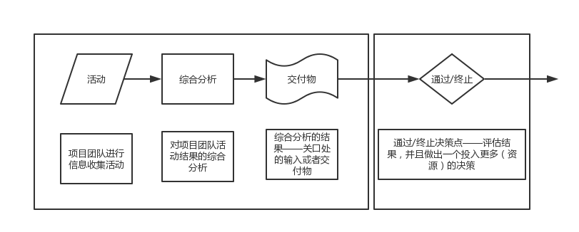
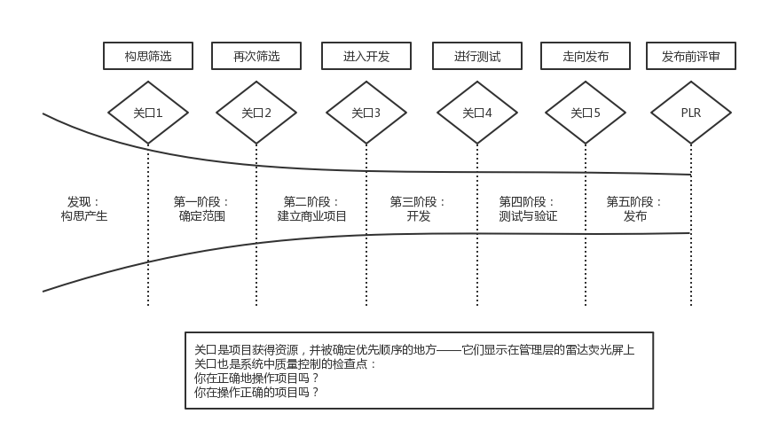

一、创新的挑战
A.挑战：如何真正做到创新
1.新产品开发的收益性的一个重要因素是开发和创新一种有引人注目的价值主张的独特的优势产品
2.大部分公司的管理，面对成熟的市场、激烈的竞争、生活的便利舒适，以及股东对于短期受益的需求，以上几点都毫无疑问地导致了对快速、低风险、建议开发的项目的追求——主动追求唾手可得的成果
B.解决方法
1.与“为了老的新产品而努力”不同，扩展、改进、升级以及改变，以此清除大部分公司的组合、行业需要创新，需要力挽狂澜，在发展的道路上需要更大胆的产品创新动力。这意味着，更长远的眼光，以及以系统为目的的解决方案和服务包
2.康宁公司的成功：领导保证，对公司能力的清醒认识，与客户建立的密切联系和对大多数客户的问题的了解，以及敢于承担较大但是完全了解的风险
3.发现主要的问题（或者机会），制定大胆的解决方案。这是行业需要的真正创新的一种形式，这是这么多公司梦寐以求的增长的来源。
C.成功创新的四个向量——创新钻石模型
1.向量1：找到一个产品创新和聚焦于正确的领域的技术战略，这是增长的动力
- 想要在更大胆的创新中获得成功，企业需要产品创新和技术战略——一个致力于将企业研发力用于最有吸引力的区域的战略
2.向量2：一个积极的环境、文化、组织和领导
- 拥有一个良好的创新环境和文化，有进行革命性、高风险的项目的研究欲望，从上到下正确的领导，这些是首要的造就成功的创新性企业的要素
3.向量3：好的创意，并用一个有效的实施系统来匹配：阶段—关口
- 创造一个好的想法只是成功的一半。另外一半是从概念阶段开始，经过开发直至投放市场
4.向量4：凭借有效的组合管理做出正确的投资决策
- 最主要的原因是缺少实质的商业案例
- 革命性的、高风险的，而且往往都很难找到相关数据和相关的商业案例做支撑，以让高层管理人员相信它们确实值得投资
- 做一些前期的工作或者谨慎的调查是很重要的，并且建立一个令人信服的商业案例
- 高层管理者经常缺乏为了革命性的理念而做出冒险的决定的勇气
D.新产品：公司繁荣的关键
1.对现代公司来说新产品的开发是最具风险也是最重要的工作
2.最好的才会大放异彩
- 平均来说，有一半的新产品开发项目是按照计划进行的。但是成功者的百分比达到了80%
- “滑移率”是一个很好的时间衡量标准，它显示 了产品上市的计划时间（通常在项目的商业案例中会给出）和实际上市时间之间的偏移。高的滑移率是不好的。
3.新产品生产率
- 生产率的概念很简单：它是输出与输入之比，或者说是一美元带来的最大收益。就产品创新领域来说，生产率被定义为输出（以新产品销售额或者利润来衡量）除以输入（以研发或者新产品开发的成本和时间来衡量）
- 新产品开发生产率 = 新产品销售额（或者利润） / 研发支出
- 最佳创新企业（前25%的企业）的新产品开发生产率是失败企业的12倍
- 总结三点：
- 成功企业和失败企业之间是存在巨大差别的——绩效上的差距不是一丁半点，而是巨大的数量级上的区别。成功的新产品开发者之所以成功不是因为踫到了好的时机或者好的运气，它们拥有的是清醒的、恰当的、可持续的以及一致性的行为、方法和方式
- 与最佳创新企业相比，行业的平均值也显得不值得一提
- 成功的企业有其自己的模式
4.风险数量巨大
- 所估计，每有1美元被用于新产品的研发，就是会有相应的2美元被用于与新产品研发相关的工作，包括营销、重要的设备或者管理成本
5.为什么现在有这么多的创新
- 4个影响创新的要素：
- 技术先进程度
- 改变消费者需求：消费者喜好的有规律变化
- 产品生命周期缩短
- 全球化
6.高失败率
- 成功的概率 只有1/7。但是我们是有方法来打破这个概率的
- 对于每7个新产品想法而言，有4个会进入开发阶段，有1.5个会投放市场，但是只有1个会成功
- 44%的新产品项目没有达到预期的利润目标，超过一半没有按时发售，32%的公司认为它们的新产品开发速度和效率很低，同时28%的公司甚至根本就不度量它们的新产品绩效
- 继续在产品创新领域努力，值得关注的关键数据包括：
- 产品投放市场的成功率
- 消耗率：在每个阶段被放弃的项目比率
- 成功者、失败者和那些被放弃的项目的资源投入比率，对于整个过程及每个阶段的均值
- 达到预期时间、利润和销售额目标的项目比率
- 大多数企业扮演的是梭哈中爱好者的角色。在开始的时候它们也有相同的获胜机会。但是因为它们不记牌（也就是他们没有做好功课，只凭它们的预感和推测）并且缺乏对好的下注方式的了解（也就是，它们在决策的时候经常做出错误的决定），所以它们输给了专业玩家
- 产品创新有很高的分线、很低的成功率，有巨额的奖金，有不断增加的赌注，并且赌注是在过程中一点点的增加和累计的。其次获胜的关键是有效的下注
- 产品创新有一点十分重要的不同：我们可以影响结果
E.定义崭新和“新产品”
1.“产品”是任何一个可以在客观市场中销售、使用或者消费的东西。 这包括实质的产品及服务，也可以是两者兼有的
2.美国的制造业联合会将新产品定义为：“任何对于消费者或者使用者而言具有新的功能、新的特点或者新的收益的东西（可以是实质的产品或者服务），同时它必须经过至少50天的研发”
3.“崭新”可以被定义为两种方式：对于公司来说新、对于整个市场来说新
4.六种不同类型的新产品
- 对于整个世界来说的新产品
- 新产品线：对于特定的公司来说确实是崭新的
- 对于以后产品线的补充：对于公司来说是最新的，但是它们是公司已经存在的产品线上可以制造的
- 对现有产品的提高和改版：这种不算很新的产品是公司现有产品线的一种替代
- 重新定位：是指对于已有产品的新的应用，经常包括将现有产品投放到新的目标市场中或者一种新的应用
- 成本的降低：这是所有新产品种类中最不“新”的一种，是用来代替公司再有产品的产品，但是它们以较低的成本创造了相同的收益和绩效
二、新产品开发成功的关键
A.新产品开发没有带来应得的收益的原因
1.为什么如此多的新产品没有实现它们的财务和销售前景？
- 1）没有创意点、不能激发客户的兴趣
- 它不能满足客户未满足的需求或者为客户解决问题
- 在开发过程中忽略了对核心竞争力和真正创新点的追寻
- 根本原因是，被处理者没有对项目开发团队提出高于竞争者产品的要求
- 第二个根本原因是在从构思到发布的过程中遗漏了关键的因素：没有强调产品与众不同的要素和有竞争性的价值比例
- 2）预先的工作没有做好
- 在新产品开发的项目上，市场调研、技术评估和财务评价都是需要踏实地进行的重要工作
- 预先工作做得不好的一个恶劣的后果就是在做关键决策的时候，如产品设计或者是否进行投资，就会出现很多的假设而非实际事实的支撑
- 原因常常是没有时间和金钱来做这样的工作，更为常见的原因是人们太过忙于其他的工作。另外一个原因是希望能够缩短产品面市的时间
- 3）对客户和用户的需求缺乏足够的洞察力
- 经常，在对市场缺乏足够的了解和研究的时候，产品开发团队或者执行者就决定了一个产品开发的概念
- 绝大多数企业没有做好市场调研工作，产品概念设计和确定产品对客户价值确定。需要明确的是，销售员和产品管理者的声音不能等同于客户的声音
- 4）摇摆不定的产品设计前景
- 一个常见的情况是产品的定义不停地改变着——产品的要求、特性。对于产品有影响力的人不停地往产品上增加新的特性或者功能
- 根本原因是预先工作没有做好
- 5）漏洞百出的项目开发团队
- 一个有效的跨职能团队可以有效地减少产品开发周期
- 但是往往没有成功，因为团队里没有核心职能部门的成员，或者选错了团队的领导者；团队缺乏凝聚力而且对产品的前景缺乏一致的观点：一些团队没有可靠性
- 6）太多的产品项目——没有重点
- 项目开发没有得到充足的资源和人员支持
- 项目的质量开始下降
- 7）缺乏竞争优势，技术和知识
- 有时这种情况的原因是因为项目的管理人员没有意识到项目开发的关键资源和能力已经消失
- 其他时候，这些能力的缺失是因为一些企业项目缩减得太厉害，以至于它们推动了重要的技术和市场人才
- 最后一个原因是必要的合作关系和联盟不存在
B.七大关键成功因素
1.成功的项目开发的一个挑战因素是为产品设计一个蓝图，所谓蓝图，就是新产品从构思到成功发布的整个过程
2.七在关键成功因素：
- 1）一个特别的产品——这个产品可以为消费者带来足够特别的利益和具有竞争力的价值体现，这是新产品成功的第一驱动因素
- 这样的产品有五倍的成功率、超过四倍的市场占有率、四倍的利润率
- 普遍的情况是大家都在开发“跟随应对型产品”和“模仿型”产品，而不是开发全新的产品
- 具有特定的客户和拥护价值的优秀新产品到底都有哪些共同的特点呢？
- a）在满足客户需求，为客户提供独特价值方面具有优秀的竞争力，或者解决了一个其他同等竞争产品没有解决的问题
- b）对于客户来说提高了产品的性价比
- c）相比同等竞争产品而言，为客户提供了优秀的产品质量
- d）为客户提供有用而且明显可见的产品价值
- 产品价值是客户花钱的目的，相比而言，产品的特性、功能是工程师、设计者设计入产品的
- 有时设计者会犯这样的错误——为产品增加很多的功能和特性，却没有给客户带来实际的价值
- 产品的卓越性是从用户的角度出发来定义的，而不是从客户关系部门、技术和设计部门的角度来定义
- 产品的特性花费的是开发者的钱，而客户花钱买的却是产品的价值
- 在思考和定义产品的独特性时，应该从客户使用价值出发
- 在客户眼中成功的产品就应该是“独特”、“不同”和有“卓越的价值”的
- 对客户的需求、问题、喜好和厌恶有深入的了解：
- a）在项目开始时就确定客户需求——在项目初期进行客户意见调查
- b）对竞争产品做一个分析。事实上是不会存在完美的竞争产品的。如果你可以发现竞争产品的弱点，那么你就已经成功了一半。开发产品的目标是使产品具有卓越性，也就是说可以超越现在产品或者可以在未来提供足够的竞争力
- c）对你的新产品做反复的测试，以验证和测试你对新产品的假设。在实际开发工作进行之前，开始检测这个产品——即使这个产品还没有被开发出来——通过概念、虚拟原型或者概念和原型的结合
- 2）基于客户的声音对成功是非常重要的，这就是所谓的市场因素和客户聚焦的新产品开发方法
- 研究常常出现的主题包括：
- a）需求识别
- b）用户需求理解
- c）市场需求满意度
- d）经常的客户接触
- e）强烈的市场知识和市场调查
- f）市场活动的执行质量
- g）对市场前端活动的更多投入
- 几乎所有对新产品开发失败的研究都表明：很差的市场调研，不足够的市场分析和市场调查，市场测试、市场开发和市场活动的不足够的投入都会导致新产品开发的失败
- 和客户或者用户紧密地合作来确定需求、问题和客户最关心的东西
- 和有创造力的用户一起工作——用户始终处在开发前端——来产生新产品开发的新想法
- 通过市场调研来确定产品的定义，也就是说，用户意见调查是产生新产品定义的主要投入
- 在整个开发过程中都与客户保持互动，而不仅仅是在开始和收尾的时候
- 将市场投入用来帮助开发上市设计
- 在整个新产品开发的项目中都要对市场有足够的重视，这个行为要从想法产生的时候开始：
- a）产生创意：最好的想法是来自客户的
- b）产品设计：当要确定产品的要求和规格时，用户和客户在设计产品时会发挥很大作用。市场调研必须用来作为新产品设计确定之前的产品设计的重要投入和对项目开发团队的重要指导。在最开始就应该进行客户和用户的需求确定，也就是以用户需求调研（客户意见调查）开始，然后进行竞争产品的分析（竞争标杆管理）
- c）在正式开始之前：一定要确保测试客户对产品概念的看法，可以通过模型、概念机、CAD图形甚至是虚拟产品来测试客户的兴趣、喜好和购买意愿
- d）贯穿整个项目：在开发的市场调研完成之前不能停止客户投入。不要等到开发的最后阶段才将产品展现给客户，这样肯定 会有很多出乎意料的不好的情况出现
- 3）在开发项目前期做好预先工作是成功的关键要素。在产品开发前进行尽职调查肯定有好的回报
- 在实际开发和设计工作之前所进行的步骤决定了最后的成功和失败
- 预先工作：
- a）初步筛选：进入项目的第一个决定
- b）最初的市场评估——第一个评估市场容量和可能的产品接受度、销量的快速市场调研
- c）最初的技术评估——对项目进行技术评估，技术风险和技术可能的实现方法
- d）最初的动作评估——供应源、制造和动作问题
- e）详细的市场调研、市场研究、和客户意见调查
- f）概念测试——向客户和用户测试产品的概念来确保客户喜欢或者会购买
- g）价值评估——确定产品对客户的价值
- h）在进入开发阶段前进行商业和财务分析
- 最佳创新企业在以下方面胜出：从用户角度确定产品的经济价值；在产品设计时倾听客户的意见；在产品开发时进行商业和财务分析
- 在项目最初阶段，最佳创新企业会努力平衡好市场导向的任务和技术活动，而那些最差创新企业则倾向于一股脑投入到技术开发中，而对于市场和产品只是在口头上表示重视
- 在开发之前执行活动的质量——像初步筛选、最初的市场和技术调研、市场研究和产品分析——与产品的财务表现密切相关
- 开发前的工作非常重要，因为它们决定了这个项目。它们回答了如下问题：
- a）这个项目在经济上是否有足够的吸引力？这个产品的销量是否值得在开发阶段的投资和商业活动？
- b）具体的目标客户是谁？这个产品应该如何定位？
- c）这个产品究竟应该怎样成为赢家？产品应该拥有哪些特性、属性和绩效特点以成为卓越的产品？
- d）这个产品是否能以合适的成本得到开发？可能技术解决方案是什么？
- f）供应源是什么？自己供应或者别人供应？成本和投资分别是多少？
- 没时间做前期工作，就在两方面犯下了错误：
- a）去掉这些工作会降低你成功的概率；
- b）去掉这些工作，今天可能会节约你的时间，但是在将来会浪费你更多的时间
- c）在前期工作没有完成的情况下，不要让项目进入开发阶段，而且还要完成得很有质量，让这行为成为一种游戏规则
4）获得清晰的产品定位——避免范围变动和不稳定的规格——意味着更高的成功率和更快地面巿
- 最佳创新企业在进入开发阶段前是如何更好地进行产品定位的：
- a）最佳创新企业更加清晰地定义了传递给客户的价值
- b）目标市场明确，同时也明确定位战略，也就是说产品相对于竞争者而言在客户心中的地位
- c）产品的概念也得到了很好的明确——这个产品将成为什么样子和有什么样的功能
- d）产品的定义很稳定
- f）产品的特性、属性和特点都得到了定义
- 在开发阶段开始前，保证明确的、早期 的、稳定的和以事实为依据的产品定义是缩短周期时间和保证新产品成功的第一因素
- 在进行全面开发项目之前确定一些项目定义步骤的合成点或者检测点，这个定义包括以下六个部分：
- a）项目开发的范围：项目发展的范围
- b）目标市场定义
- c）产品概念
- d）可以传递的价值
- e）定位战略
- f）产品的特性、属性、绩效要求和高层次的规格
- 即使是在那些动态性很强的市场，产品设计的一些要素需要随着项目的进行不断地变动和调整，在开发前是可以确定很多要素的
- 建议专门针对那些面对动态市场、在产品开发之前很难确定产品定义的情况：
- a）进行必要的前期工作
- b）尽可能地在开发阶段之前就完成整体的产品定义
- c）在开发之前就确定产品的哪些要求和规格是可以确定的，哪些是变动的和不确定的。最好列出两栏：一栏是确定的因素； 另一栏是不确定因素
- d）随着开发进度的不断推进，要不断地收集数据来确定你产品中的变因因素，这就是成功因素
- 5）循环的开发过程——建立、测试、获取反馈和修改——早点让客户接触产品的要素，常常可以得到合适的产品
- 循环的开发
- a）建立，即使只是一个产品的模型或者代表
- b）测试，测试客户或者用户对于产品的兴趣、喜好、购买意愿
- c）获取反馈，获得客户的反馈的第一手资料，知道产品哪些地方需要得到改进或者改变
- d）修改，根据客户反馈修改产品的定义，并且进入下一循环的“建立—测试—获取反馈—修改”过程
- 人们看见具体的物品或者有相应的体验之前是不清楚自己到底想要什么的。所以快速地为客户提供物品，然后一直重复测试直到真实产品测试
- 让你的成果出现在客户面前，即使这个成果离最终产品还有很长的距离。然后尽快获得客户可信的反馈，对这个产品做必要的改进，在下个循环中为客户提供更加成熟的产品版本
- 不要进行完全的产品开发，将完全成型的产品提供给客户，这里只是向客户提供一些不昂贵的、可以快速开发出来的模型一类的东西
- 6）良好的设计和有效执行的市场发布是新产品成功的核心。而发布工作的核心部分则是坚实的市场计划
- 产品不仅要足够优秀，而且它的价值也要得到足够的宣传和推广
- 做市场调查来了解客户和购买者的行为
- 进行市场测试或者进行试售来检验产品的适销性，同时测试市场发布计划的要素
- 做全面的发布前的产品分析
- 执行发布的能力
- 不要认为好的产品就不需要进行推销了，也不要把产品发布当成一个后来添加的事物
- 关于新产品发行和市场调查的四个建议：
- a）市场投入计划是新产品开发不可分割的一部分
- b）市场投入计划必须在新产品开发的早期进行
- c）市场投入计划的好坏是由其基于的市场信息所决定的
- d）实施这个计划的人，即销售部人员、技术支持人员和其他一线员工、必须参与市场投入计划的研发
- 7）速度！有很多方法可以加快项目进度，但是是以产品的质量为代价的
- 减少产品生命周期是优先考虑因素的理由：
- a）速度可以产生有竞争力的因素
- b）速度可以产生更高的利润率
- c）速度意味着稳定性
- 速度很重要，但是可能没有人想象得那么重要；对于某些项目来说，速度肯定不是一个压倒性的优势
- 加快产品开发的负面作用：
- a）在通常人们出于好意而选择走捷径时导致了灾难
- 在产品开发早期，即在项目开发前端和市场研究时急忙推进，造成了之后发现产品设计不符合客户要求，整个项目计划不周
- 通过减少客户测试阶段的时间来加快产品进程，会导致产品投入市场之后出现产品可靠性问题
- b）减少产品开发周期会导致关注简单且迅速的线索，即对产品进行线形的延伸和细微的调整，意味着之后由于缺少重要的创新而推动长期的竞争优势
- c）设定不符合实际的产品开发时间表，会导致项目成员在错过里程碑时的挫折感、紧张和道德问题
- 既可以提高成功的可能性又缩短产品投入时间的因素：
- a）把事情按优先次序排列并焦点集中
- b）一次性就把事情做对
- c）前端作业和定义。基于事实而非传闻和猜想来做项目的前期工作。并给出明确的产品和项目定义，在项目后期节省时间
- d）组建一支真正的跨职能团队
- e）平行的开发流程
三、成功的因素——为什么最佳创新企业能够胜出
A.对于企业来说的七大决定性的成功因素
1.成功的企业关注：关注少而精的项目，并合理进行项目组合。通过采用系统组合管理方法和在新产品构思到发布系统中加入严格的继续/终止决策点来实现
- 有效的项目组合管理是构思到发布流程必不可少的部分，协助公司做出正确的发展投资方案
- 组合管理实践的标杆调查结果：
- 1）有正式和系统化的组合管理系统来协助公司做出合理的产品发展投资决策
- 2）可获得资源有限的情况下，挑选了合适数量的项目
- 3）合理排列项目的优先次序
- 4）项目组合中包含有有利于公司发展的高价值项目
- 5）良好的项目均衡把握
- 引进把关严格的关口，并且学会“舍弃一些萌芽期项目”。如此，公司将有更好的项目关注，更少但是更好的开发项目
- 大多数公司所采取的措施，即同时从项目上减少少量的资源（而不是做出严格终止决策），而这样做的最终结果是资源过于分散
- 不合理的项目优先次序划分主要是因为没有一个项目排序、评分、优先次序划分、评估或者甚至是终止项目的系统或机制。公司一般没有具体的决策点或关口；不清楚谁才是合适的决策人——决策的核心也不明确；公司没有一个正式而标准的项目评价体系
- 新产品的成功是可以预测的：项目特征能十分清晰地区分成功项目和失败项目
- 以评分板形式评价项目选择和优先次序划分：
- 1）战略层面：项目和公司战略一致的程度以及这种战略程度的重要性
- 2）竞争和产品优势：项目是否可以区分，可否提供特别的消费者利益，或向使用者呈现不一般的价值定位
- 3）市场吸引力：市场成长速度、市场份额多少以及竞争环境是否为良性
- 4）突出并利用公司核心竞争力：项目是否能利用公司的核心竞争力，如市场、技术、制造/运营
- 5）技术可行性：能够发展和生产产品的可能性，项目是否要求很新而且很复杂的技术？还是技术的翻新？
- 6）风险和回报：风险下的项目经济前景（如净现值、内部收益率、投资回收期）
- 组合管理和项目混合对于公司十分重要：最成功的产品创新公司明显和其他公司有不同的开发组合混合
2.突出并利用核心竞争力对项目的成功至关重要——忽略核心优势的研发项目比较容易失败
- 协同（或者突出并利用核心竞争力）意味着新产品项目所需要资源等和公司在以下方面的资源、能力、经验间的完美匹配：
- 研发资源
- 营销、销售（销售队伍）、分销（渠道）资源
- 制造或运营能力和资源
- 技术支持和客户服务资源
- 管理能力
- 利用和协同是将新业务和旧业务联系起来的常用纽带。用产品创新的语言理解就是，利用已有的内部优势、竞争力、资源和实力可以提升新产品项目成功率的能力
- 如果有可能，公司开发新产品时尽量一直“从优势地位出击”
- 对新产品成功和失败的调查，“利用核心竞争力”影响公司的原因：
- 1）资源可获得，而且只发生边际成本：通常成本更低，风险更小
- 2）专业知识：在自己的精通领域（市场或技术）开发新项目，由于有丰富的领域知识，因此开发团队十分方便
- 3）经验：熟能生巧——将经历记录下来，并按经验曲线做事
- 两种重要的核心资源优势：
- 技术杠杆：高技术杠杆或技术增效产品的成功率几乎是低技术杠杆产品的3倍
- 营销杠杆：充分利用公司已有的营销资源和技术的产品成功率超出了其他产品成功率的2倍
- 在策划新产品策略和选择开发何种新产品时，永远都不要低估已有资源的作用。不能利用公司内部资源的竞争领域和项目，势必会让公司耗费更多的精力和财力来开发这些领域和项目
- 作为保证所需的资源和能力的解决途径，合作和外包也存在风险。并导致公司需要承担高额的费用
3.针对有吸引力的目标市场。针对有细分市场的项目更具有价值，且成功率更高，因此 ，市场吸引力的关键要素就是项目选择标准
- 市场吸引力有两个方面：
- 1）市场潜力
- 2）竞争强度
- 针对目标市场的新产品成功率几乎是原来的两倍，并且能为公司获得列多的市场份额和更高的利润
- 公司最好把上述两个方面作为项目选择和优先次序划分的评分系统标准
4.合理的组织结构、设计、团队是产品创新成功的主要因素
- 产品创新是团队努力的结果，项目团队的组织方式和部门在很大程度上影响项目成果
- 务必为产品创新设计公司自己的组织。产品创新不是一个部门的“秀”！它是一个涉及多学科和职能部门的努力成果
- 对于每个重要的硬性项目，有明确的员工指派小组——作为项目一部分并确实为项目服务（而不只是开会）的员工
- 跨职能合作是公司新产品开发过程中相当薄弱的部分
- 团队负责人和公司创建领导者的角色差不多：公司家的角色，不仅领导团队——就像某个运动团队的负责人——还要促进项目的发展，寻找资源，抵挡项目的外部干扰，尤其是来自高层管理者的阻力
- 项目团队问责制也是产品创新成功的关键之一
- 分工明确且一直跟随团队，有责任的成员，并由一个十分确定的团队负责人领导的跨职能团队是最佳创新公司的普遍特性
- 很多公司引入了“发布后复审”，在复审过程中，项目团队要向当初批准项目通过的高层管理者报告项目发布后的几个月或者甚至一年的结果，这是一个闭环反馈系统
- 为了培养团队责任感，有一点十分关键，即项目团队成员必须一直跟进产品开发过程，因此团队负责人一直负责项目从构思到发布的整个过程也十分重要
- 开发时间很长的项目是个例外，以制药产业为例：这里我们的建议是指定联合负责人——一个团队负责人和辅助负责人
- 建立项目团队成员的集中信息共享系统，可以实现项目信息的共享，而且允许不同团队成员同时编辑同一文档，甚至可以实现不同的智能部门、地域、国家的成员之间的信息共享和文档编辑
- 为产品创新建立一个系统性的方法——从构思到发布的蓝图设计——可以破除职能界线，促使不同职能部门的员工积极参与，新产品研发的流程是建立在不同的任务基础之上，并且提供要求不同职能部门的参与和投入的均衡
- 公司采用职能化和职能型矩阵的方法往往会导致最差新产品绩效，三种最有效的方法：
- 1）均衡矩阵：指派一个项目负责人来监督和领导项目团队；成员是从不同的职能部门派遣过来的。项目负责人和职能经理共同承担对于完成项目的责任和共同享有权力：批准和指导是共同完成的
- 2）项目矩阵：指派一个项目负责人来监督和领导项目团队；成员是从不同的职能部门派遣过来的。项目负责人承担主要的责任并享有最大的权力。职能经理根据需要来调配人员，并且提供专业技术和指导；关口会议就是确定资源并对人员分配达成一致的会议
- 3）项目团队：有一个项目负责人管理由各个职能部门员工组成的小组，职能经理们对这些人员不再具有正式的干涉和支配
- 项目团队比较适合大而复杂的项目，而项目矩阵方法则能较好地适合或复杂和较简单的项目
- 较强的项目领导力——一个热诚而有权力的项目负责人——对于及时的和成功的项目，显得很重要
- 为了使整个团队协作，团队成员位置应该互相靠近
5.高层管理者的支持也不能保证项目成功，但是会推动项目的发展进程。不过，很多执行者都理解错了。在产品创新过程中，有7种成功执行者行为值得借鉴
- 中高层对项目的影响优势：
- 1）高层执行人员全身心投入产品的创新
- 2）公司高层的年度目标是新产品指标
- 3）公司高层为团队和成员提供有力的支持，并授予权力
- 4）执行者把项目日常活动和决策交给项目团队负责——他们不会事无巨细地管理
- 5）公司高层参与继续/终止的决策
- 成功的创新领导者的七种习惯：
- 1）他们抓住每个机会来领会和支持产品项目——在语言和行动上：
- 他们对创新充满热情
- 他们资源准备到位
- 2）他们促进公司创新战略的产生
- 3）他们积极参与关口的继续/终止决策：
- 他们实施有效把关
- 他们制定“参与规则”，并遵守规则
- 4）他们是创新组合经理：
- 他们了解公司的开发组合
- 他们在组合评审中扮演积极的角色
- 5）他们理解 并支持公司的构思到发布阶段-关口系统
- 6）他们为创新培养适宜的组织气候，培育 组织文化
- 7）他们不断进步
- 高层管理者支持的重要性主要体现在将产品推向市场的阶段。当公司项目在淘汰项目和发布产品之间做考虑时，高层管理者的支持就起到了很大的作用。高层管理者可以搜集资源，简化烦琐手续，并做出正确的决策推动项目的完成
- 高层管理者在产品创新过程中的主要作用是为产品创新的发生创造条件，扮演“幕后”促进者角色，而不需要是执行者。作为推动项目成长的源动力，必须长期投入内部产品研发的过程中。为产品创新制定一个由公司战略和目标驱动的远景计划、目标、战略；使必要资源易得，而且保证在短缺的时候，这些资源不会供给更多的即时需要；还必须参与到严格的流程中，协助公司把产品推向市场；必须给项目团队授权，并且通过作为导师、推进者或教父来支持那些承诺
- 高层管理者干涉项目的做法是错误的，原因有两个：
- 1）这样夺取了团队的权力
- 2）坦诚地说，研究证明，在处理这些项目上，高层管理者不能合理处理那些“执行中的偏好项目”
6.资源投入——有的放矢
- 产品失败的根本原因：关键领域的主要资源不足
- 缺乏资源会带来一系列不利后果 ：
- 1）工作质量降低，重要的活动完全没有处理
- 2）周期时间或推向市场时间变长
- 3）缺少革新人才和大胆创新
- 4）团队士气低落
- 资源危机的原因是什么？
- 1）由于竞争局势严峻，因此公司的相应对策是用更少的资源做更多的事情，因此，公司限制或减少项目投入资源
- 2）公司在很大程度上受金融界的影响，追逐短期利益
- 3）在有限的资源的情况下，公司同时研发的项目过多，导致公司缺乏重点关注
- “更快、更好、更便宜”是不能实现的事实：
- 1）新产品资源投入程度与产品绩效及绩效因素有很大的关系
- 2）最佳创新公司更加注重产品创新，并且加大专门资源的投入
- 公司是否正在遭遇资源危机问题，通过以下两个方法来分析：
- 1）确定公司是否有足够合适的资源分配给目前开发管道中的活跃项目。根据时间线，确定完成项目的所需资源，再考虑这些资源的可获得性——谁能处理新产品研发工作？最后确定重要资源限制 ——公司最先消耗完的资源、人员、部门或能力
- 2）确定公司是否有足够的资源来实现新产品目标。从新产品目标开始分析，决定实现目标所需的资源，公司可能发现现有资源能力和实现目标所需的资源能力的巨大差距
- 根据公司经验，资源——能力分析通常可以发现以下信息：
- 1）发现很多处于开发管理中的项目
- 2）高层重新考虑目标，通常是新产品目标
- 3）确定创新过程中主要瓶颈部门或团队
- 其他分析方法包括以下几种：
- 1）制定公司产品创新技术战略：战略包括设定目标，为公司量化产品创新目标，并决定如何实现这些目标
- 2）资源专门化：让产品创新人员成为专门的资源——把所有时间都用于产品研发工作——而不是划分到不同的任务
- 3）组合解决方案：对于不同类型的项目，考虑使用战略桶的方法来准备资源
- 4）关注的焦点：研发少而有价值的项目，学会舍弃一些偏好的项目
7.遵循多阶段、纪律严格的新产品流程（阶段—关口系统）的公司项目效益更好
- 阶段—关口系统是针对如何成功且有效地推动新产品从构思到发布流程的路线图、“食谱”或“脚本”
- 在没有系统的情况下将新产品管理好，就像让队员在没有队员靠拢磋商也没有战术预演的情况下，进入橄榄球场，而且还期望他们能得分
- “新产品流程”或系统指推动新产品项目从构思到发布过程以及过程之外的概念上及运营上的模型
- 阶段关口系统：增强的团队合作，循环和修正次数的减少，提高的成功率，失败的早期发现，更好的发布，甚至缩短 的周期
四、阶段—关口：从构思到发布的系统方法
流程是用来取代旧模式，指引公司保持恒久活力的方法。它不是孤立的，也不是暂时的，更不是用来应付一阵子然后就抛弃的东西
A.何为阶段—关口方法
1.新产品流程，意味着不仅仅是一个流程图那么简单，这个词已包含了所有的过程要素——阶段、阶段活动、关口、产出以及构成一个定义明确的新产品流程的关口标准
B.涵盖从构思到发布全过程的新产品体系的7个目标
1.目标1：执行质量
- “质量的定义是明确的；它意味着在全部的时间里满足所有的要求，它建立在所有工作都是一个流程的原则之上，专注于改善业务流程，从而消除错误”
- 处理质量问题的方法是把产品创新视为一种流程，在这个流程中运用流程管理和质量管理的技巧。要注意业务中的任何流程都是可以通过质量的观点来进行管理的。（只要）确保正确地完成流程的每个细节，其结果便是一种高质量的产出
- 理想的计划应该是：
- 1）重视完整性，没有缺陷、没有遗漏，成为一个完整的流程
- 2）重视质量，保证这些环节的执行质量是一流的。强调第一次就把事情做好，并且在流程中纳入质量控制和检查环节
- 3）重视重要环节。要多集中一些注意力和资源在关键性的和薄弱的步骤上，尤其是前期的和市场导向的活动
2.目标2：选准重点，做好优选工作
- 通常这种资源问题更多的是因为缺乏管理重点，是欠缺项目评估的结果，同时也是没有确定优先顺序和做出通过/终止决策的结果
- 在新产品开发流程中，需要的是新产品“漏斗”，而不是一个“通道”
- 关口是在新产品系统中设定的不同的点，每个关口都有自己的通过要求和规则，包括：
- 1）预备检查的标准：项目是否为即将遇到的关口做好了准备？是不是在恰当的位置上可交付使用？
- 2）投资一个项目的经营理念的测量标准：通过/终止决策点和优先次序标准
- 3）有关聚集在行动计划、资源可得性和对项目进行资源配置的决定等方面的标准
3.目标3：快速并行的螺旋上升进程
- 并行处理是一种满足完整的高质量流程所需要的解决方法，同时也可以满足当代快节奏的商业世界对时间的要求
- 在建立一个螺旋上升的路径，一个系列的类似“建造—测试—获取反馈—修正”的闭合流程。可以较早地验证产品设计的正确性，并且最小化无用的时间，它能够阻止项目在错误的需求假设的领域中陷得过深。螺旋开发是基于这样的前提，即客户在看到最终产品之前是不了解他们的真正所需的
4.目标4：一种真正的跨职能团队的方法
- 新产品开发流程是跨职能部门的：它要求从组织中的不同职能部门中投稿人员并使其积极参与活动
- 虚假团队的特征包括：
- 1）所谓的团队成员只在会议上出现，但并没有真正投入团队中
- 2）团队成员没有获得从“日常工作”中解脱出来的时间
- 3）团队成员许诺在下次会议之前完成某些任务，但是他们的“真正的工作”常常起到阻碍作用，或者他们的职能部门领导分配给他们其他的任务
- 4）团队成员为项目承担了许多责任，但被赋予很少的权力
- 5）团队成员没有得到基于整个团队取得的成果而给予的业绩评分或者可变的报酬
- 理想的团队特征：
- 1）项目团队是跨职能的，具有来自各个职能部门的团队成员，包括市场、工程、研发和运营部门。提供给团队成员从其日常工作中解脱出来而用于新产品开发项目的时间
- 2）项目团队要有明确任命的团队队长或者领导，在该项目的整个过程中始终都是负责任的，而不是只局限于一个阶段
- 3）团队领导要有正式的授权，这意味着能从职能部门领导那里共同出让权力
- 4）有些资源是“专用的”
- 5）团队的结构应该具有流动性，随着工作的需要会有新成员加入（或者原成员离开）团队
- 6）高层管理人员掌握整个项目团队，团队整体对结果负责——这里包括所有团队成员，而不仅仅是团队领导
5.目标5：融入客户声音的强烈的市场聚集
- 与市场相关的活动容易成为新产品流程中最薄弱的环节，但是它们却和成功密切相关
- 如果把更高的新产品成功率作为目标的话，那么市场聚集——以一种高质量的方式执行关键的市场活动——必须作为一种例行工作而非期望被纳入新产品系统中
- 必不可少的9个市场活动：
- 1）基于客户需求形成新产品构思
- 2）前期市场评估
- 3）决定客户需求和愿望的市场调查和有关客户声音的工作
- 4）竞争分析
- 5）概念验证
- 6）开发过程中的客户反馈
- 7）用户测试
- 8）市场测试或者试销
- 9）产品发布
6.目标6：把前期准备工作做得更好
- 坚实的前期准备工作和明确的前期产品定义是一个成功的新产品开发流程的关键因素
- 必要的前期活动：
- 1）初步筛选：投入时间和资金的初始决策
- 2）初步技术评估：评估技术可行性、描述生产或者操作的含义、识别技术风险和问题的早期尝试
- 3）初步市场评估
- 4）具体的技术评估：证明技术可行性和说明技术风险的细致的技术工作（不是开发）
- 5）操作（供应来源）评估
- 6）详细的市场调查：客户声音的用户需求和愿望研究，竞争分析
- 7）集成的资源和能力评估：是否需要一个合作伙伴或者外包伙伴
- 8）财务和商业分析：分析该项目期望的财务结果和风险水平
- 9）产品定义和商业方案：把技术、运作、市场和财务的分析结果综合成一个产品定义，形成项目可行性方案和项目计划
- 10）对商业方案进行决策：一项全面的项目评估和通往全面开发的决策
7.目标7：具有竞争优势的产品——大胆创新
- 不要忘记利用任何机会建立产品的优势——差异化的产品、独特性收益和对客户卓越的效用
- 有一些寻找产品优势和大胆创新的方法：
- 1）保证在每个阶段的关口至少有一些强调产品优势的标准
- 2）要求过程的每个阶段都要包含设计用来传达产品优势的关键行动
- 3）要求项目团队向（做出）通过/终止（决策）的项目评审人员提交有关产品优势的证据，使产品优势成为一项重要的特点并且在会议上进行公布（而不只是在财务预测中详细描述）
- 4）确保对新产品成功至关重要的综合的产品定义不仅包括性能表现方面的要求和规格，而且要针对引人注目的客户的价值诉求进行非常清楚的描述
C.风险管理
1.新产品管理就是风险管理，所以你的路线图必须在设计上体现风险管理（的思想）
2.风险的组成：风险数量和不确定性
3.风险管理规则：
- 第一个规则是：如果不确定性很高，那就保持较低的风险数量
- 第二个规则是：随着不确定性减少，可以增加风险客体的数量
- 第三个规则是：增加决策过程——打破要么全部得到要么一无所获的决策，使之转变为一系列的阶段和决策
- 第四个规则是：要准备为相关的信息付费以减少风险
- 第五个规则是：提供一个跳出点——提供一个收手、离开或者退出博弈的决策点
4.如果风险得到成功的管理，随着风险数量的增多，结果的不确定性必 被刻意地降低。而且，除非不确定性确实降低，否则风险损失量不能允许增加。不确定性和风险损失量必须保持平衡
5.五个博弈规则 ：
- 1）当新产品项目的不确定性很高的时候，要让风险损失量保持在较低的水平
- 2）随着不确定性降低，要让风险损失量增加
- 3）把新产品流程划分成一系列的步骤或者阶段
- 4）每个阶段都要有减少不确定性的意识
- 5）提供及时的评估、决策和退出的决策点
D.一个新产品系统的最佳实践
1.阶段—关口系统的结构
- 每个阶段由一组规定的、跨职能的、并行的活动组成：
- 执行某些收集数据的重要的活动的团队
- 随后是数据分析和说明
- 创造关键的交付物（信息）
- 基于高层管理者——资源的拥有者——的通过/终止决策的基础上
- 每个阶段的入口（或者出口）是一个关口：这些关口控制着过程，并且起到质量控制和通过/终止决策检测点的作用

2.阶段
- 每个阶段都被设计成用来把项目推进到下一个阶段或者决策点所需要的信息。不同种类的信息——市场、技术、运营——都非常重要，因此每个阶段的工作都是跨职能领域的：这里没有研发阶段或者市场阶段
- 典型的阶段—关口系统的综合流程，包括以下方面：
- 发现阶段：旨在发现和寻找机会并产生创意的前期工作
- 确定范围：对项目进行决策、初步的调查和挑选，主要是案头研究
- 确立商业项目：一种更具体的调查，包括前期调研——同时涉及市场和技术——从而产生商业项目，包括产品和项目定义、项目可行性说明和项目计划
- 开发：对新产品进行真正的、具体的设计和开发，以及操作和生产流程的设计
- 测试和验证：在市场、实验室、工厂对已提出的新产品进行测试和试用 ，以及该产品的营销、生产或操作
- 产品发布：商业化——全面的运营、生产、营销和销售的开始
3.关口
- 每个阶段前面有一个关口或者通过/终止决策点
- 关口作为一种质量控制检测点、通过/终止决策点和优选决策点，同时也是允许开发活动向流程的下一个阶段推进的关口
- 关口包括以下几个部分：
- 1）一系列要求的交付物：项目领导和团队向决策点提交的东西
- 2）项目据以判断的准则 ：这些准则包括快速检查的，“必须满足”的或者“清除什么”之类的问题
- 3）确定的输出
- 关口通常由各个职能部门的高层管理人员负责，他们是把关人
.png)
E.阶段-关口系统综述
1.开始阶段：发现
- 构思是新产品开发流程的给养或者牵引线，它们会开启或者中断系统
- 需要有伟大的构思，并且要有大量这样的构思
- 活动包括：
- 实施直接而基本的技术研究，探索新的技术可能性
- 和领先或者创新的用户一起工作
- 使用客户声音研究捕捉说不清的需求和客户的问题
- 竞争分析和对有竞争力产品的逆头脑风暴
- 实施一个创意-建议的机制，激发来自员工的构思
- 扫描外部世界，通过“开放的创新”来搜寻来自外部的构思
- 使用战略性的计划活动，发现市场中的缝隙、缺口和机会
2.关口1：构思筛选
- 构思筛选是向项目分配资源所做的第一步决策：项目在这一决策点诞生。标志着对项目做出初步的、暂时的肯定
- 把项目限定在一些关键的“必须满足”和“应该满足”的准则上，这些准则用来处理战略一致性、项目可行性、机会的大小、市场吸引力、产品优势、规划公司资源的能力和与公司政策的适应性等问题。财务准则通常不包括在第一次的筛选中
- 一个用于“必须满足”准则的检查要素表和一个用于“应该满足”准则的计分卡有助于缩小讨论的范围和对项目进行排序
3.第一阶段：确定范围
- 目标是决定该项目的技术和市场优势，将快速确定项目的范围，涉及案头分析工作和侦查工作，很少或不会涉及主要的调查工作，通常在一个月内完成
- 前期市场评估包括许多相对而言花销不大的活动：网上调查，图书馆查阅，和主要的客户联系，划分重点，甚至对一部分潜在客户进行快速的概念测试。目的是决定市场规模、市场潜力和可能的市场接受度，并开始塑造产品概念
- 初步技术评估，目的是评估开发和制造（或者供应来源）的路线，技术或者运营的可行性，可能的实施时间和成本，技术、法律和行政管理风险和障碍
4.关口2：两次筛选
- 某种程度上说是更为严格的筛选。如果在这一决策点做出继续进行的决策，那么项目将会进入下一个花销比较大的阶段
- 项目要经受有关是否准备就绪的一系列问题的考验，也包括类似于在关口1处使用过的一系列“必须满足”和“应该满足”准则的检验
- 额外的“应该满足”准则可能要纳入考虑的范围，这些准则处理销售队伍和客户对提案产品的建议，潜在的法律、技术和管理法规方面的“致命性”可变因素，以及在第一阶段收集的新数据的结果
- 在关口2，财务收益将会被评估，但只是一种快速简单的财务计算（如回款周期）
5.第二阶段：建立商业项目
- 商业项目打开了产品开发之门，在第二阶段，商业项目被构建起来，是一个具体的调查阶段，在开发活动广泛铺开之前，这个阶段清楚地定义了产品，并且在很大的花销之前验证了该项目的吸引力
- 确立成功的新产品定义是第二个阶段的主要工作。这一定义的因素包括目标市场定义，产品概念描述，产品战略定位的说明，产品能够带来的好处和价值的陈述，并且说清（对于客户来说）必要的和渴望的产品特征、属性、要求和规格
- 实施市场研究来明确客户的需求、愿望和偏好——帮助定义“成功”的新产品
- 竞争分析也是这一阶段的工作的一部分。另外一个市场活动是概念验证：被提议的新产品陈述提交给潜在的客户，从而衡量其反应，依此明确新产品可能的客户可接受程序
- 详细的技术评估重在考察该项目的可操作性，客户需求和“愿望列表”被转换成一项技术和经济上可行的概念上的解决方案
- 最后，作为证明该商业方案合理性的一个方面，将实施一项详细的商业和财务分析。财务分析通常涉及一种折现的现金流方法，连同敏感性分析一起来审视可能存在的下降趋势的风险
- 结果是该项目的商业立项书：整合的产品定义——成功的关键——达成一致，并且产生了完整的项目合理性说明和详细的项目行动计划
- 最好是由一个跨职能部门的成员组成的团队来处理——（他们是）最终项目团队的核心小组
6.关口3：进入开发
- 是在进入花费巨大的全面开发活动之前 ，项目可以被枪毙掉的最后一个控制点。称之为“资金关口”：一旦通过了关口3，财务上的承诺则会是实质性的。多数淘汰决策是在早期关口中做出的，关口1、关口2或者关口3；相当少的项目会在关口3之后被枪毙，标志着产品和项目定义的结束
- 评估包括回顾第二阶段的每项活动，检查这些活动是不是得到实施、执行的质量是不是很好——（这些）通过检查是否准备就绪的问题（来实现）
- 财务分析和障碍的结果是这一次筛选的重要部分
- 开发计划、初步运作和市场计划将在这一关口得到审查和批准。完整的项目团队将被正式指定
7.第三阶段：开发
- 开始开发阶段计划的实施，以及产品的实体开发（或者标示出服务的细节和以服务为基础的IT工作）。实验室测试、内部测试或者a测试保证了产品在控制的条件下符合要求
- 一些周期长的项目，大量的里程碑或者阶段性的项目回顾将会被纳入开发计划
- 项目本身没有控制性关口：这里不做出通过/终止决策，但是，这些里程碑检查对项目提供控制和管理
- 错过一两个里程碑通常标志着项目是理所当然的，（这时）就需要立即的且紧急的关口回顾，最后的交付物是经过部分测试的产品原型
- 注重的是技术工作，但同时市场和操作活动也要并行实施
- “建立-测试-获取反馈-修正”（流程）来回或者重复的循环，伴随着每个开发的结果都提交给客户以进行评估和反馈，如快速原型、工作模型、首个样机等
- 详细的测试计划、市场发布计划、生产或者操作计划，包括生产设施要求，也都在制定之中。更新的财务分析被准备着，同时行政管理、法律和专利权等问题也都要得到解决
8.关口4：进行测试
- 开发后期的复审是为了检查产品和项目的进程以及后续的吸引力。回顾和检查开发工作，确保开发工作已经保质、保量地完成，以及开发出来的产品事实上和关口3中提出的初始定义相一致
- 通过经过改进的财务分析来对经济方面的问题进行再次审视
- 下一阶段的测试和验证计划会被批准并立即实施，另外详细的市场和操作计划也会为了可能的未来实施而被再次回顾
9.第四阶段：测试和验证
- 主要测试和验证整个项目的可行性：（包括）产品本身、生产或者动作流程、客户可接受程度和项目的经济状况，包括：
- 内部产品测试
- 用户、性能或者现场试用产品
- 试验性的、限制规模的生产/操作
- 模拟市场测试或试销
- 修正商业和财务分析
10.关口5：准备发布
- 最后一个可以枪毙该项目的决策点，重点关注测试和验证阶段的活动的质量以及它们的成果
- 通过准则主要聚集在：第四阶段的测试结果是不是积极的；预期的财务收益；产品发布和动作启动计划是否保持一致；准备（是否）就绪的检查——所有的工作都为发布做好了商业准备。运营和市场计划会被复审，并且在第五阶段被批准实施
11.第五阶段：发布
- 包括市场发布计划和运营计划的双重实施。生产设备采购、安装和使用；物流路径被确定；销售也开始了
12.产品发布后的评审
- 在产品商业化后的某段时间，新产品开发项目就会终止，项目团队被解散 ，同时产品将成为该公司生产线上的“常规”产品
- 这个时候对项目和产品的性能表现进行评审。将最新的有关收入、成本、费用、利润和时间安排的数据和预测计划相对比来测量（新产品的）市场表现
- 最后进行事后评审——对项目的优点和缺点做出重要评价，（研讨）有关从该项目中能够学习到的东西，以及如何才能把下一个项目做得更好
- 标志着项目的结束
- 项目团队和团队领导在产品发布后的一段时期内，直到发布后的评审节点，仍然应该对项目的成败负责
- 许多公司实行了两阶段的发布后评审（活动）：一个是在发布后很短的时间内，对项目（的错误）做出立即的修正，并且趁着记忆新鲜的时候，对项目进行回顾分析；而最后的回顾则是在发布的12-18个月中进行，来审视与期望结果的反差，并且终止这个项目
F.揭开阶段-关口（流程）的神话——阶段-关口流程所不涉及的方面
1.阶段-关口流程不是一个职能性的、阶段性的评审体系
- 现在的阶段-关口流程是建立在速度的基础上。阶段是多职能的，而不是由某个单一的职能领域所主导：它是一个商业流程，不是一个研发、工程或营销过程
2.阶段-关口流程不是一个古板的、因循守旧的流程
- 阶段-关口是一个从A点（构思）迈向B点（成功的新产品）的地图：
- 1）并不是每个项目都要经历该模型的每个阶段或每个关口
- 2）在某些项目中，某些活动或者交付物可以省略或者绕开
- 3）同样，可以把活动从一个阶段转移到另一个阶段
3.阶段-关口流程不是一个线性系统
- 尽管阶段是一个接一个地安排的，但每个阶段内部，活动和任务根本不是线性的
4.阶段-关口流程不是一个项目控制机制
5.阶段-关口流程不是一个过时的、呆滞的系统
- 它发生了相当大的进化，包括新的精准和快速生产的原则； 它建立在大量新的在早些时候无法想象的最佳实践的基础之上； 并且现在存在着这么多不同的定制的阶段-关口（系统）的版本
6.阶段-关口流程不是一个官僚主义流程
- 要记住：这里的目标是一个系统化的、流畅的流程，而不是一个停滞的官僚主义流程
- 如果存在任何（冗余）程序，诸如会议、委员会、强制活动，或者（其他）不增加价值的形式，赶紧消除它们
7.阶段-关口流程不是一个数据录入方案
- 尽管具备要求数据输入的软件，可以成为流程的一个有价值的促进，但不可本末倒置
8.阶段-关口流程不仅仅是一个后期的或者货物交付的流程
9.阶段-关口流程不同于项目管理
- 阶段-关口流程和项目管理应同时运用，项目管理方法应用于阶段-关口流程的各个阶段之中，如在相对比较长的和复杂的阶段（第三、四、五阶段：开发、测试和验证、产品发布），必须使用项目管理的方法：
- 1）团队的最初任务，用于定义项目——它的使命和目标
- 2）组建团队的活动
- 3）基于计算机产生的时间表和关键路线计划
- 4）并行处理（同时而不是按顺序地实施活动）
- 5）里程碑评审点（在每个关口处得到批准并且纳入行动计划）
- 6）定期的项目评审
G.内在的成功驱动力
1.对成功和速度至关重要的因素和教训：
- 1）该流程是前期负载的：它更多地强调准备工作和开发前的活动
- 2）该系统是多学科和跨职能部门的，围绕一个具有充分授权的、跨职能部门的团队而构建，包括技术、市场、运营/生产甚至包括财务方面的活动
- 3）并行处理加速了整个系统，每个阶段的活动同时实施，而不是按顺序去做，并且在每个阶段的团队成员和活动之间存在许多相互影响
- 4）强烈的市场聚集是该系统的一个特征，市场方面的投入开始于（新产品）发现阶段，并且在流程从始到终的每个阶段都是一个重要的方面，只有与市场相关的活动以一种有质量的方式被完成，否则项目是无法通过关口的
- 5）螺旋是流程很重要的一部分，使用“建立-测试-获取反馈-修正”这样反复的环状路径
- 6）（流程中）有更多的重点，这些关口在流程的早期就剔除了低劣的项目
- 7）集成的产品定义在第二阶段——确定商业项目被引入系统
- 8）（该流程）自始至终都特别强调执行的质量，除非满足确定的质量标准，否则项目不能通过关口
2.一个好的检查表——有关运营方面的“阶段-关口”系统的特征
- 明确定义阶段
- 每个阶段定义的活动
- 定义的通过/终止关口
- 在关口处定义的通过/不通过准则
- 为每个关口定义的交付物
- 为每个关口指定的把关人
- 一个可视的、文档化的流程
- 新产品开发流程是否真正在使用
- 面向项目团队的助推流程
- 可适应的和可衡量的流程
- 适当位置的流程管理者
五、下一代阶段-关口——企业如何使系统演化和加速
A.全球对于重新创造阶段-关口的投入
1.以下是对阶段-关口的七种重要改进：
1）具有可扩展性——扩展到能适应开发项目的不同的风险水平、规模和类型
2）具有适应性——螺旋式或敏捷开发、并发活动、阶段交叠及有条件“通过”决策
3）引进 “精益生产原则”来消除它们的构思到发布体系中的浪费和冗余——精益产品开发
4）通过更好的指标、成功标准的运用及严格的发布后评审等方法使持续改进（也是精益开发的一个方面）成为现实
5）“开放式创新”是一种从企业外部积极寻求构思、技术解决方案甚至最终产品并且向外部出售充分利用的知识产权的创新模式
6）生命周期管理系统已经与开发流程一体化，阶段-关口现在成为全生命周期管理模型
7）某些安装了出色的（研发管理）软件以支撑其构思到发布体系的企业已经使阶段-关口系统在软件系统中自动运行
B.适应不同风险水平与项目类型的扩展
1.下一代阶段关口：
- 阶段-关口Full版：发现，构思阶段；关口1；阶段1，确定范围； 关口2； 阶段2，商业项目；关口3；阶段3，开发；关口4；阶段4，测试；关口5；阶段5，发布；发布前评审
- 最常见的五阶段五关口流程
- 这些项目是典型规模更大、风险不确定性更强甚至更高风险的项目
- 阶段-关口XPress版：发现，构思阶段；关口1；阶段1、2，确定范围与商业项目；关口3；阶段3、4，开发与测试；关口5；阶段5，发布；发布前评审
- 具有中等风险水平的项目（如改进、修改和扩展等）设计
- 通常代表开发过程中的大部分项目，是具有持续创新或者再创新性质的项目，其设计是用来保持产品线持续更新并且保持良好保养
- 关口决策者通常不是高层管理者团队而是中层管理者团队
- 阶段-关口Lite版：发现，构思阶段；关口1；阶段1&2，确定范围与商业项目；关口3； 阶段3、4、5，执行：开发、测试与发布；发布前评审
- 针对简单的客户要求或者销售人员等提议这样的小项目
- 通常代表少数对现有产品修改的项目，虽然规模小，但集合起来通常会消耗较大比例的企业开发资源
- 关口决策者通常是由技术工作组和销售队伍组成的中层管理者团队
2.通用的法则是，风险越高，项目越要遵循上一章所提到的完整的阶段-关口流程——务必坚持阶段-关口流程
3.一句忠告：必须要有可见的原则 ，才能使一位希望获得正确流程的项目领导者确保更高风险的项目不被错误地划分至阶段-关口Xpress版或者Lite版，必须开发出关于市场、技术创新及项目成本的指导
4.面向技术开发项目的阶段-关口TD模型
- 典型的面向技术开发和技术平台（TD）的阶段-关口系统包含三个阶段和四个关口
- 阶段1，发现和构思产生是整个流程的触发点
- 构思筛选：第一个关口是构思筛选，即起初关于对TD项目投入有限数量的时间和资金的决策
- 确定范围：第一个阶段是确定项目的范围，目的是为技术开发项目建立基础
- 关口2中是制定关于开始阶段2中有限的实验或者技术工作的决策
- 技术评估：阶段2的目的是证明理想情况下的技术可行性，活动主要包括进行深入的概念技术分析、执行可行性试验或者明确的技术工作、发展伙伴关系网络、确定资源需求、解决资源缺口的方式及评估技术对公司的潜在影响
- 关口3：这一关口是关于部署超过1-2人月的决策，并且为更广泛、更昂贵的阶段3打下基础
- 详细调查：阶段3的目的是实施完整的试验性的或技术开发计划，以此来证明技术可行性并确定技术范围对企业的价值
- 应用路径关口：这是TD流程的最后一个关口，是一个或多个新产品或流程开发项目的“开门者”
5.PDMA手册中狭义定义平台项目为，在一个产品系列中被多种产品所共享的设计和组件
C.一个适应性强、灵活、敏捷的流程
1.螺旋式开发缩小开发之前对快速、早期和事实为依据的产品定义需求与在开发过程中灵活并根据新令牌和变化 的市场条件而进行调整的需求之间的差距
2.第一个循环或者螺旋是在阶段2的早期 进行的客户声音研究
3.走访的目的是倾听和观察，而不是“展示和游说”。在第二个螺旋期间，项目团队展示 提出的产品演示
4.阶段-关口必须 是敏捷的、适应性强的、灵活的。螺旋式开发伴随 活动进行——阶段的交叠和活动（并行活动）——是完成这一目标的方式
5.“并行执行”：
项目团队通过并行执行活动而不是连续地执行活动来推动活动进行。其原则 是：当信息可靠且稳定时则继续进行
在某些情况下，将活动从某一阶段移动至更早的阶段是可接受的，其效果是阶段交叠
6.团队所拥有的信息应该依据以下几个方面进行判断：
.png)
7.一句忠告：只使用不可能变化 的那部分数据
8.关口可以通过允许第五个不同于普通决策（继续/终止/重做/搁置）的决策来加速运行：有条件通过
9.采取 措施使你的构思到发布体系敏捷、灵活、适用性强。借助用户建立螺旋式开发—建立测试—反馈—修改的循环，以便那事确认产品的正确性并确保早期 的购买意向。建义采取并行机制，允许活动在阶段的范围内进行交叠，考虑阶段的交叠——为节约时间，将某一活动提前移至前一个阶段。要注意风险的存在，注意平衡好延迟成本和失误成本
D.高效、精益、无浪费
1.采用精益生产的技术——价值流分析——将所有的浪费和无价值增加的工作从你的构思到发布体系中消除
2.两种陷阱：
- 交付物过多
- 1）由于项目团队并不清楚什么信息是需要的，所以他们增加交付物——他们准备了一份过于全面的报告
- 2）过错也可能来源于企业阶段-关口系统本身的设计。系统中经常包含非常复杂的模板，无论在哪一关口都要填满
- 要求过多的非价值增加工作
- 一些企业的流程将任何可能的活动都加入到每个关口中，结果就是在每个阶段产生大量任务和活动。此外，很多阶段-关口流程随着时间的推移，由于越来越多的修饰工作加入系统而变得过于笨重
3.我们应该非常谨慎而不混淆冗余（冗余被定义为做一些不增加价值的工作）与精神上的懈怠或者马马虎虎执行（忽略确实能增加价值的关键任务，却几乎不去投入时间和精力地做这些工作）
4.价值流是以最大化客户价值为目的的所有流程步骤的连接。在产品开发中，价值流代表与新产品或者服务有关的所有价值增加和非价值增加活动的连接
5.一个典型项目中所有的阶段、决策点及关键活动绘制出来，并加注每个活动的典型时间和指明的决策。流程应该工作的方式和流程实际的工作方式的区别变得显而易见
6.一定要摆脱浪费、冗余及额外的负担！如果不增加价值，则将其消除
E.指标、团队问责和持续改进
1.新产品开发中的持续改进具有以下三个要素：
- 拥有绩效指标，度量一个特定的新产品项目执行的好坏
- 建立团队对结果的问责制。当项目不符合指标时，项目团队的所有成员都对绩效结果负全责
- 建立学习和改进机制，要集中精力在修正原因上——防止问题再次发生——而不是在故障表面简单处理或者惩罚团队，这样只会变得更加糟糕
2.必须 进行持续 学习和改进：如果在结果度量过程中发现不足而不采取措施，同样的错误就会反复上演。在发布后评审过程中，当项目团队未完成目标时，根源分析就会随之而来，确定不足的原因并防止其复发。关注的焦点在于持续改进——一个学习型的组织——而不是在于归咎团队，产生一个恐惧和惩罚的文化
3.发布后评审
- 第一重评审在产品发布后不久进行，对初步的结果进行评估，确定校正和修改需求，项目团队对项目进行一项回顾性分析——对项目从开始到结束的非常详细 的评审
- 目标是明确 如何 使下一个项目更好和更快：每个项目都要比上一个项目更好
F.面向开放式创新的阶段-关口
1.采用“开放式创新”创造一种开放式创新的阶段-关口系统来处理此类项目。落实好基础设施、新指标以及文化的变化来确保开放式创新发挥作用
2.在开放式创新中，企业的目光由内至外，再由外至内，涵盖创新流程的所有三个方面，包括观念化、开发和商业化
3.确定哪种开放式创新模型对你的企业是合乎逻辑的（内向、外向、观念化、联合开发、引进 许可、出售许可还是联合营销）并根据这种开放式创新模型开发出合适的阶段-关口系统
G.生命周期管理与阶段-关口
1.生命周期管理的目标：
- 确保拥有开发项目在初始发布期之后很长一段时间的愿景并且也要考虑长期的投资项目
- 确定“必须要做”中需要作为新产品“进化”计划部分的举措，使得这些附属项目在需要的时候可以及时得以进行
- 详细规划对新产品的退出战略，包括未来数年后何时不再需要对新产品的支持
2.生命周期阶段-关口模型
- 关口1：构思筛选、机会分析
- 关口2：批准通过的项目作为路线图的候选，批准通过小型的商业项目
- 关口3：批准通过开发，将项目包含到开发组合中
- 关口4：开始进行商业化和营销方面的投资，进行现场试验 ，批准通过生产试验 ，批准通过产品生命周期计划
- 关口5：商业化发布，销售和生产的开始
- 关口6：发布后评审；针对批准在所有市场发布的产品，宣布成功，项目团队解散 。实施产品发展计划然后是一段长时间的产品管理和发展（从关口6至关口7）
- 关口7：产品开始进入淘汰，需要考虑商业影响和转移用户计划
- 关口8：产品淘汰计划成功结束并决定/宣布服务终止日期；迁移剩余用户
- 关口9：产品生命结束——产品终止
3.诸如产品发展（扩展、更新和修改）、产品终止、客户转换、产品处理或回收这些问题都非常重要，应该作为生命周期计划的一部分
H.自动化的阶段-关口系统
1.自动化的好处是双重的：完成流程活动与交付物需要更少的时间；与流程执行相关的行政任务负担显著降低
2.阶段-关口自动化的另一个好处是，在项目团队成员之间和与关口决策者或者高管间沟通上的简化及知识共享
I.在设计下一代阶段-关口系统中常见的错误
1.六西格玛设计初衷是用来降低产品缺陷并提高产品质量，因此六西格玛是对缺陷率而言的
2.“定义、测量、分析、改进、控制”（DMAIC）观念并不完全能与模糊发明前 相结合。“当一个构思产生时，你是不希望以传统的DMAIC框架来进行不必要分析的”
3.对于健全的产品组合管理来说，有效的阶段-关口系统是十分必要的，通过建立严格的关口，一些较差的项目就被淘汰——通过漏斗效应，总的结果是一个更好的产品组合
4.IT工具本身并不是强大的构思到发布流程的替代：首先你需要一个固定的创新流程，然后软件才会成为推动者
六、发现——寻找突破性的构思
A.对于重大新产品构思的短缺
1.一项关于创新的重要调查得出在众多管理实践中，有五个最重要的最佳实践，包括拥有一个构思到发布体系、资源管理创新战略及市场远见：构思管理、技术和资源管理、战略计划、产品-开发流程、市场调研
2.如果构思开始就很普遍，那么不要指望阶段-关口流程将其变成优秀的构思
B.从哪里开始？从产品创新和技术战略开始
1.有效构思产生的先决条件是为公司制定一个产品创新战略，确定了战略焦点的竞争领域或战略竞争领域，就是公司想在什么方面集中研发力量，公司希望从哪里获得构思
2.这些领域必须既有吸引力（大型的、增长的市场，并非激烈的竞争，开发新产品的良好机会），又可以在这个领域有效地利用公司的技术、营销及生产等核心竞争力，以获得竞争优势
3.这些竞争领域逐渐成为公司构思的“搜索领域”。它规定什么在范围之内，可能更重要的是，什么在范围之外。
4.每个关口会议的首要问题是“这个构思和我们的创新战略一致吗？”没有一个定义明确的创新战略，公司很难做出合理、正确的项目选择
C.客户声音法
1.不管客户声音法的普及程度如何，它在产生具有突破性新产品构思的有效性方面，受到许多使用者的高度评价，并且组成最受好评的5种方法
2.人种学研究或“野营”
- 人种学法，在营销中主要用来形容人类文化学，包括对消费者进行实地调研或长时间观察消费者行为，当消费者使用或者误用产品时，他们会进行观察和调查
- 虽然它不是很普及，但是这种方法的有效性得分非常高，排名第一
- 观察法极其依赖观察者的技巧
- 人种学法不一定适合所有的产品类型和市场
3.客户拜访团队法
- 团队拜访消费者或使用者；他们一般采用深度访谈方式，这种访谈主要是基于精心准备的访谈指导来发现使用者的问题和对新产品的需求和需要
- 在普及程度和有效性的综合方面，它是第一名
- 最好的问题是间接并可推理的
- 突出的优势是，在这些访谈会话期间的确定、关注消费者问题及不能用言语描述需求的能力，这是新产品构思的重要来源
- 主要挑战是如何使客户配合公司访谈（同意参与访谈并提供诚实的回答），发现实施这个十分有价值的研究的时机，培训访问者并设计一份问题合理的访问指导
4.客户焦点访谈小组——问题发现
- 焦点小组由客户或使用者一起参与，来为新产品确定需求、问题、最关心点及建议（在产品开发中，焦点访谈小组法通常是用来检测概念，而不是产生构思），主持者巧妙地把讨论的关注点集中在客户的问题或需要上，然后帮助使用者处理这些问题
- 焦点访谈小组法是挖掘客户意见的成本有效且时间效率高的方法，尤其是在了解消费者产品市场方面
- 这种方法的挑战包括：使正确的客户同意参与研讨中（尤其是选择正确的B2B客户问题）；寻找一个有焦点访谈小组技巧和了解产品知识的合适的主持者；成本问题
- 小规模的样本调查几乎不可能得到任何定量的结论
- 小组的效率很大程度上依赖主持者的技巧和中立
5.领先使用者（创新使用者）分析
- 如果公司精心挑选一些富有创造精神或领先的使用者，然后和他们进行密切合作，那么公司可以期望得到更具创意的新产品构思
- 这里的领先使用者指创新公司、组织或者走在市场潮流前面、需求远远超过普通使用者的个人，方法的关键在于跟踪这些领先使用者轨迹，这些人是少数的——处于钟形曲线的最右端
- 4个主要步骤：
- 1）确定目标市场和公司在目标市场的创新目标
- 2）决定趋势：和在这个领域对新兴技术和尖端应用具有开阔视野的人交流
- 3）通过网络或问卷调查确定领先使用者
- 4）开发突破口：举行一个由确定的领先使用者和关键内部技术和营销人员参加的研讨会
- 优势在于，创新型客户，很有可能帮公司开发出下一个新产品，而这就是一种揭示新产品是什么的方法
- 主要挑战是，确定哪些是创新型用户，让创新型用户参加场外研讨会，然后合理组织并正确地进行研讨会议
6.客户或使用者设计
- 公司邀请客户或使用者来帮助产品开发人员设计下一个新产品，这样的话，他们可以为产品的显著改善提供很多意见
- 优点是，这些见多识广的使用者为设计下一个突破性创新的新产品指出明确方向，正因为他们知道他们自己的需求和需要，只能应用于一些特定的产品类型
- 挑战是，如何 利用有效工具来让那些使用者设计产品
7.客户头脑风暴和逆向头脑风暴法
- 经常用于B2B市场的客户活动上，或者在针对客户产品上取代关键点小组会议。需要聚集一些使用者，然后公司和客户或使用者一起进行正式的头脑风暴研讨会，从而提出新产品构思，为了发现产品的缺陷和不足，公司会采用逆向头脑风暴法来进行研讨会
- 使用这种方法是有代价的，并且困难重重：组织活动可能相当耗费时间；让那些商业客户参加活动也是一项艰巨的挑战；而且来自同一行业的成员（潜在竞争对手）参加研讨会时，组建小组问题就有点棘手
8.客户咨询委员会或小组
- 这种方法需要客户咨询委员会或进行中的使用者小组的帮助，让他们就问题和新产品方面的需求给些意见
- 比较适合用来维护良好的客户关系，但是并不是最适合构思产生的方法
9.爱好者社区（Community of Enthusiasts）
- “网络人种理论研究”在是人种学上的新发展，只不过它是在网络上进行的。当人们在博客或在推特上发表东西、向公告栏投稿时，公司就会“倾听”。通过对这些内容的分析，公司可以确定主题、问题和潜在的产品新构思
- 优势是，一旦建立社区，维护社区的成本可能相当低廉，公司可以深入了解使用者社区正在发生什么，以及使用者的问题和需求
- 挑战是，这种方法需要大量的技巧、洞察力和时间来对内容进行分析，这种方法可能只应用于少数产品类别，如运动器材、电脑软件、宠物等具有高参与度的产品类别
D.面向构思产生的战略方法
1.战略构思方法可以用于确定行业或者市场中的变动、混乱或者干扰，这通常预示一个新兴的市场或者一个重大的新产品机会
2.核心竞争力是指那些让公司拥有显著的预先优势或优势地位，从而使公司区分于公司的竞争对手的技能和知识
3.建议进行一次彻底的行业和市场评估。分析价值链；确定行业因素；回顾历史趋势，制定未来方案
4.偶尔 ，彻底的或阶段性变化的创新可能会大幅度地改变行业的前景
5.当突破技术产生时，之前的大多数公司通常在后来不再是主导公司。这种现象称为成功专制（Tyranny of Success）
6.公司如何从新兴技术寻求构思？
- 首先，不断地关注公司所在行业的外部技术前景
- 下一步，关注其他行业研究相关问题的技术，再从中寻找新技术
- 当发现新技术时，评估它成功的可能性
- 1）当前技术不能满足的客户需求
- 2）出现新的客户需求（外部环境转变导致的结果）
- 把眼光放到客户要求之外，并要比主流市场和使用者看得更远
- 最后，一定要做很多实地调查
7.最大的危险是那些公司没有看到即将到来的危险！而了解这些威胁并预测机会需要很强的间接视力能力
8.有助于培养公司间接视力的关键问题包括：
- 行业中哪家公司理解事前预警，并对其实施行为？
- 公司过去的盲点是什么？
- 其他行业是否存在类似的举动？
- 周边客户（邻近市场、之前的客户）及非直接竞争者说了些什么？
- 什么样的未来可能真正不利于（或帮助）公司？
- 有考虑到未来方案吗？
9.未来情境的价值，研究的问题包括：
- 最好的未来情境是什么？
- 公司外部环境中可能的最差的未来情境是什么样的？
- 表示这些未来情境的一些相关特征是什么？
10.运用情境设想法主要是设想某个或另一个“未来情境”是可行的，然后评估每个决策制定的结果，并对每个可能的未来进行假设
11.竞争力分析目的是理解他们的优势和弱点，为什么他们在竞争中会取得胜利或失败，以及公司可以从它们的失败教训或成功经验中学到什么
E.启动公司战略措施
1.举行一场综合会议或研讨会议来总结公司战略措施——战略分析、预测市场和技术突破、边缘视觉、设想备用情境及竞争力分析
F.采用开放式创新作为构思的主要来源
1.开放式创新有一个优势，即从发明者、科学家、供应商、设计者、消费者及小公司那里挖掘构思、知识产权、技术甚至成品——这些都是超出公司自身工程或研发部门有限能力的巨大资源。主要劣势是，作为新产品构思的来源，很多开放式方法只能应用于一些特定类别的产品，这种方法需要耗费大量的时间和工作来详细调查、征求、处理和加工构思或知识产权
2.拥有相对简单的技术和B2C产品的公司十分适合开放式创新方法
3.从最有效到最无效排序的构思产生的开放式创新方法：
- 1）合作伙伴和供应商：从外界合作伙伴和供应商寻求新产品构思，优势是供应商和合作伙伴可能会带来超出公司专业技术的技术能力，问题是供应商和合作伙伴也许和公司一样缺乏创造能力，所以不要期望从这个来源获得很多好的构思
- 2）访问外部技术团体：从外部科学和技术团体那里寻求构思和技术解决方案
- 3）搜索小型公司和新创公司：访问小型公司和新创公司，然后从这些公司中获得构思
- 4）外部产品设计：包括通过网络邀请公众——客户、使用者及来自外界的其他人员——来获得的成品设计（而不仅仅是构思。有时被称为“群众外包”（Crowd-Sourcing）
- 5）构思外部提交：是通过网络或者公司网页邀请公司的客户、使用者和外界其他人士来提交他们的新产品构思
- 6）外部构思竞赛：举办一场构思竞赛并邀请外界人士来提供构思
G.技术开发和基础研究——改变竞争基础
1.如果公司可以进行基础研究或开发新技术，那么确保在公司的发现阶段建立这个研究单元。基础研究和技术开发将会频频撒下重大新产品、产品族或者平台的种子，这是一个极为重要的新产品构思
H.专利计划
1.专利是一个很好但总是被忽略的有价值的信息来源，其中包括新产品的构思
2.公司员工可能是非常好的新产品构思的潜在来源。建立内部构思捕捉系统。但很多公司对此理解错误
3.内部构思捕捉：通常包括正式地从公司员工中征求构思（通常通过内部的网页或使用购买的软件），然后，通过一些正式的和结构化的流程来筛选和处理这些构思
4.举行一个MRG或外部构思产生活动
- MRG就是主要收入来源（Major Revenue Generator）。MRG活动是一项外部公司活动，其目的在于，公司能在数天艰苦工作结束的时候，至少得到或找出一些重要构思
- 第一天的早上，把听众分成多个“分场讨论小组”（Breakout Teams）。小组的任务是：“90分钟时间来确定我们的市场环境中正在发生的重要趋势、转变、变化的客户趋势及潜在突破”
- 第一天的下午：在同一分块讨论小组中，分配一个新任务，这一次让他们确定在他们和他们客户所在的行业中，将会影响市场和可能改变公司经营方式的重要技术转变
- 到第二天中午，开始进入机会筹划（Opportunity Mapping），让小组描绘出一些在他们的评估中所得到的机会——这通常意味着确定和列出一些大胆构思和“意外的发现”。最后全体成员使用评分板给这些构思投票，然后，用“绿点”标注得分较高的构思
- 在活动结束之前 ，一定要确定出“最佳结果”，并让团队为每个构思制定一个“前进计划”——建立研究构思的团队和接下来的步骤——以此作为两天活动最后的活动内容
5.开展一场内部创新“秀”：这个创新“秀”就像贸易展会一样，员工自行搭建展台，并展示他们的能力、技术和有关未来的热门构思
七、前期工作：从发现到开发
构思是不能长期保存的，必须对它们采取一些处理措施。当该构思还有新意的时候，它的管理人要有热情，要为它而活，并且如果需要的话，要为它而死
A.博弈的最初几个步骤
1.新产品成功的关键经常存在于早期或者开发之前的活动：做好准备工作，实施坚实的客户声音工作，同时获取锐利的、早期的而且基于事实的产品定义
2.产生一个构思，并把它转换成一个成功的产品概念和坚实的产品定义，由一个坚实的商业项目支持的全部步骤。有人称之为“模糊的前期（工作）”或者产品创新。在你的公司里，它可能是模糊的；但对于最佳创新企业，它绝不是模糊的——它是被（有效）管理的
B.第一阶段：确定范围
1.第一阶段中的指导思想是“投入少许资金，收集一些信息，这样项目可以根据这些更好的信息在关口2进行重新评估”。要对项目的技术优点和市场前景进行快速而经济的评估
2.第一阶段活动的总结——确定范围
- 第一阶段的目的：对所提出的项目构思的一个相当快速、内部的范围确定
- 第一阶段的活动
- 前期市场评估：快速地确定产品的市场前景，潜力、可接受程度，要求；非细致的市场研究，只是依靠已经取得的及内部的（信息）来源有原则进行的侦查性的工作和案头研究
- 前期技术评估：对技术可行性、可能的技术解决方案、技术风险、工艺性（或者供应来源）和知识产权方面的问题的概念性评估。对合作伙伴的检查
- 前期商业和财务分析：一个商业的理性检查 ，对商业准则和财务前景的一种基本的、快速的检查；（检查）可能的投资回收期
- 针对第二阶段的建议和行动计划：一种通过/终止决策意见，推荐的行动计划【时间表、资源、人员和人次；交付物和（进入）下个关口的日期】
3.确定推荐的项目是否具有商业前景：
- 评估市场吸引力和潜力
- 估计可能的产品可接受程度
- 判断竞争状况
- 把构思塑造成一种试验性的产品设计
4.第一阶段可以相对经济地获取市场信息的来源：
- 实行因特网收集
- 你自己的图书馆
- 搜索内部报告
- 关键客户
- 组织带有少量客户的中心小组
- 竞争对手的广告
- 你自己的员工
- 咨询和研究公司
- 金融商行
- 政府机构
- 行业专家
- 编辑
- 行业协会
5.前期技术评估，第一阶段的第二个方面，是指把提议的产品交给公司的技术人员——研发、工程和运营方面的人员——进行评价（通常这个节点上项目团队至少有一名技术人员）。目的是确立初步的、大略的技术和产品性能目标，实施一项非常初步的技术可行性研究，指出可能存在的技术风险
6.与伙伴合作会为项目带来（目前）缺失且必需的技术和资源，但是也会存在风险和成本
7.在这一早期阶段，对预期的销售、成本和所需要的投资的估计都很可能被过高地推测，更多是的作为一种“明智地检查”
C.第二阶段：确立商业项目
1.你获得一个好的构思，或者有时候获得一个无价值的概念，并把它转变成一个由强健的商业项目支撑的一鸣惊人的新产品定义
2.第二阶段活动的总结——确立商业项目
- 第二阶段的目的：重新定义已提出的产品概念，使之成为成功产品的定义，从而为项目进入开发阶段建立一个坚实的基础。结果包括，一个已定义的产品，目标市场及对由一个坚实的商业项目作为支撑的技术可行性的理解 。详细的市场调查和技术调查导向一个商业项目，其内容包括集成的产品定义、项目合理性证明及项目行动计划。
- 第二阶段的活动
- 客户需求和愿望研究：（运用）客户声音研究来确定产品诉求，进行面对面采访或者实地驻扎（人种学研究）——深入的市场研究。确定什么是“价值”，什么是“客户利益”；从用户或者客户的观点出发 ，寻求定义一个成功产品的概念
- 竞争分析：对竞争状况进行详细观察——同时涵盖直接与间接（观察）。确定谁是竞争对手、产品的优势和劣势、预期的未来产品、定价情况、竞争对手的其他优势和劣势、他们如何进行竞争及其表现
- 市场分析：把来自上述两个研究的所有市场信息，连同更深入的第二手信息，都集中到一起。确定市场规模、趋势、细分状况和（比例）大小、买家行为和竞争对手的状况。依赖于第一阶段中的类似的来源，只不过要更深入得多
- 具体的技术评估：把这些市场输入转化成一种技术上可行的产品设计或者概念。
- 概念验证：在全面同意开发产品之前市场测试——第一次真正的“建立-测试-反馈-修正”螺旋过程。和客户或用户一起测试已提出的产品概念
- 财务和商业分析：审视该项目的商业依据，包括战略评估（适应性和影响）。同时也要（进行）一个核心能力评估，并描绘合作（或者外包）战略，还包括国际因素的作用。要进行一项详细的财务分析：净现值（NPV）、内部报酬率（IRR）、回报和敏感性分析，也要有一个风险评估
- 行动方案：对项目提出建议（通过/终止），并为第三阶段设计一份详细 的行动方案——时间表、要求的资源、开发最后的交付物
3.商业项目具有 3个主要的构成要素：
- 产品和项目定义
- 项目合理性证明
- 行动计划或者前进路线
4.产品和项目定义回答了“是什么和为谁的问题”
5.集成的产品定义包括以下方面：
- 项目的范围
- 目标市场定义——明确产品为谁开发
- 产品概念——该产品将会是什么，能做什么
- 产品带给用户或者客户的利益，包括针对客户的价值诉求
- 战略定位
- 产品的特征、属性和性能要求
- 高级别的说明书
6.项目合理性证明：回答了“为什么”的问题。也就是说，为什么你的公司应该投资这个项目？是对商业、财务、利润和风险这些要考虑的因素进行评审的基础
7.行动计划：回答了“如何做，由谁做和什么时候做”的问题，列出了从开发到产品发布期间的行动计划
8.详细的市场研究：一个用户的“需求和愿望研究”；一个竞争分析；一个用来测量市场接受度的产品概念测试；技术工作将市场“愿望清单”转变成一个技术上可行的概念。产品定义取得一致意见；同时制定一个彻底的项目合理性证明和详细的行动计划
D.实施客户声音研究：用户需求和愿望研究
1.用户需求和愿望研究目的是向客户探询从而向产品构思中添加内容——把产品相当粗略的构思发展成为一种完备的描述：（包括）利益、价值诉求、特征、性能表现和设计要求
2.一个优秀的产品——这样的产品能够给客户带来独特的利益——是取得成功的第一要素
3.只有通过理解物理特征（产品特征）和客户感受（客户感受到的利益）之间的相互关系，你才能够坐下来并且设计一种成功的新产品
4.聚集客户群——获得一些关于产品价值和要求利益的见解
5.客户声音的用户需求和愿望研究的具体信息目标通常包括：
- 以现有的解决方案识别客户问题
- 确定客户没有得到满足的、没有说出来的或者没有明确表达的需求
- 识别客户在一项新产品中的愿望和偏好
- 确定（客户）对当前 （竞争的）产品的喜欢和满意的地方，以及对这些产品不喜欢和不满意的地方
- 识别赢得订单的准则和它们的相对重要性
- 鉴别订单赢得标准，以及它们相对的重要性
- 研究客户如何使用产品（他们的使用方法），以及他们在使用中面临的问题
- 理解客户使用的经济性——对于客户来说是全生命周期成本
- 需求能够通过发现来了解：
- 产品或者服务特征所传递给客户或者用户的利益
- 客户所希望解决的难题
- 产品能够让客户或者用户做什么
- “客户的小声抱怨”——那些通常是处于失意之中的客户低声悄语地说出的事情
- 倾听他们的声音，通过：
- 深入的个人访谈
- 聚集客户和用户群组
- 市场调查
- 在客户声音研究中提出的问题：
- 潜在的客户现在是如何解决他们的问题的？目前的解决方案是什么？
- 通过当前的解决方案，客户或者用户体验到的哪些问题没有得到解决？他们关注的焦点是什么？
- 如果客户能进行一次选择，他们现在会购买哪种方案、产品或者品牌？
- 客户的选择准则是什么——价格、某种特征和功能、服务等
- 当前的（竞争的）产品在每个选择准则中的排名是怎样的？
- 客户具体喜欢竞争性产品或者当前解决方案的哪些方面？
- 客户在一项新产品中具体追求的是什么？
- 客户将准备做什么样的权衡
- 客户是如何使用（以及误用或者滥用）产品的？
- 客户对经济性（的理解）是怎样的？
- 客户声音研究的要点和提示：
- 认真思考你的信息目标
- 使用一种结构化的问卷进行访谈，为什么？
- 完整性：你会涵盖所有你想要回答的问题
- 一致性：每名应答者以相同的方式、相同的词句被提问
- 记录：你拥有了一种持续 的记录答复的方法
- 这不是在销售，而是在倾听
- 采用一个实用的方向定位——寻找所追求的利益，以及产品应该是什么样的、应该为客户做什么——而不仅仅只是一个特点和规格列表
- 你是否正在收集正确的信息？做一个“预后验”分析——在开始出去做访谈之前，假设该项研究已做完了——你已经有了这些问题的答案。给定这些答案（之后），你能够做出设计和项目决策吗？
- 确保受访问者是具有代表性的——不仅仅是纯粹为了方便而挑选出来的一些人或者客户
- 沿着价值链向下游移动，超出你的直接客户之外，去搜寻市场需求的深刻见解
- 让你的技术人员也对与到访谈活动中
- 亲自从事访谈——整个项目团队——这样你能得到第一手的学习
- 研究客户的方法或者使用环境，以及产品如何 与整个系统相适应
E.进行竞争分析
1.优秀的新产品的第二个关键要素是竞争分析，目的是：
- 理解竞争对手的产品及其优势和弱势
- 了解竞争对手如何经营——他们如何竞争、在哪里及如何赢得客户
- 对竞争战略的评价和竞争对手的产品如何 与它的市场组合相适应，也许会提供一些有关你的产品发布将会带来的预期竞争性反应的线索，如它会引发强烈的市场抵御吗？
2.竞争分析中的关键问题：
- 谁是主要的参与者
- 竞争对手的产品的特征、属性和性能表现是什么？
- 当你（的产品）投放市场时，竞争对手的产品可能会是什么样子
- 竞争对手还有什么其他优势和弱势——如销售力量、客户服务、技术支持、品牌，广告和促销
- 竞争对手是如何运作的
- 竞争对手做得怎么样？
- （如果可能）竞争对手的成本曲线是怎样的？其产量和产能如何？以及其利润怎样？
3.获得竞争情报的方法：
- 找到所有可能的竞争文献资料和竞争广告
- 通过多样的商业出版物实施一个因特网研究，寻找有关竞争对手的信息：声明、新产品介绍、厂房扩建或者财务结果
- 深度获得你的竞争对手的产品
- 描绘你的竞争对手的产品路线图——他们近期的产品介绍及其时间表、特征和性能
- 参观商业展销会
- 和你的销售人员和服务人员交谈
- 设计一些问题来向你的目标客户收集他们关于竞争对手的意见：有关竞争产品、竞争对手的销售队伍、服务和定价的评价和见解
- 和供应商探讨你的竞争对手
- 使用财务来源
- 雇用一家擅长（收集）竞争情报的咨询公司
F.回溯市场分析
1.目的是描绘出具体的市场情况——市场分析——该描绘包括：
- 市场的规模、增长性和趋势
- 市场细分情况——竞争对手的规模、增长性和趋势
- 买家行为——在购买活动中的谁去买 、买什么、何时买、在哪里买、如何买等问题
- 竞争状况
G.细致的技术评估时间
1.技术人员必须找到一种满足已经表达出来的客户需求和偏好的方法，可能包括：
- 在你的技术人员之间的讨论——来达成一个纸面上可能的技术解决方案
- 解决创造性的问题来处理主要的技术难题
- 头脑风暴法以得出创造性的解决方案
- 诸如质量功能配置等技术来将市场要求转变成为技术规格
- 详细的资料收集和专利查询
- 向外部专家寻求帮助
- 甚至也有一些物理性的技术工作
- 一些可靠的实验或者实验室工作（概念的语气）
- 建模
- 构建一个粗糙的实物模型或者“原型概念”
- 设想可能的解决方案
- 如果是软件产品，创建几个屏幕页面，编写一些代码
2.在详细的技术评估中的关键问题
- 将会产生满足市场要求的产品的可能的技术方案是什么？
- 实现这一技术解决方案会涉及哪些内容？
- 技术风险和潜在的障碍是什么？
- 你拥有必要的技术、竞争力和业绩记录来开发技术解决方案吗？
- 如果在开发中进行合作：你的伙伴的技术竞争力怎样？
- 在实现一个原型产品的过程中，所包含的关键步骤是什么？
- 可能会出现 哪些法律的或者专利的、管理的及安全的问题？
- 产品可能会被怎样制造或者生产（供应源）？
- 生产产品的单位成本是多少？
3.在第二阶段花费不超过过第三阶段开发成本的10%，利用10%的资金去获取一些知识和信心
H.向客户测试概念——开始螺旋过程
1.概念验证是开发阶段之前的最后一次测试，用来证实产品概念（因此，被推荐的产品）事实上是一种成功的产品：它检查客户的需求是否被正确地理解、解释和转化；并且在还不是太晚的时候对产品设计做出最终的调整
2.概念验证不是一种前景研究，而是一种测试或者证实已提出的产品概念事实上是一个成功的产品——（客户的）购买意向已经建立
3.概念测试的设计类似于设计客户声音的用户需求和愿望研究，主要在两方面与用户需求和愿望研究体现出不同之处：
- 在概念测试中，你有一些东西向客户展示来请求客户的反馈
- 你寻找的信息类型与在用户需求和愿望研究中的不同
4.你能够越好地传达最终产品将会是怎样以及能够做什么，你就能够得到越精确的购买意向测量结果：
- 将口头描述与视觉形象联系在一起使用
- 为客户考虑，展示产品及其包装的图片或者描绘图都能够给予显示
- 使用模型（如初始的工作模型或者实体模型）或者成本低廉的速制产品原型来向客户进行展示
- 发挥创造性，并且运用你的笔记本电脑和可得的软件的能力
- 如果你的项目风险和风险数量足够大的话，尝试使用视频演示或者也许是在你的电脑上的一个交互 演示来进行完整的诉求展示
5.概念测试是探求客户对产品的反应，从而深度评估（该产品的）市场接受程度和预期的销售额，信息目标包括以下方面：
- 观测客户对推荐产品的兴趣程度
- 观测客户对产品概念的喜爱程度
- 区别的程度
- 一个对比的测量——观测客户对与其现在正在使用的竞争品牌或者产品有关的概念的偏好，以及产生这些偏好的原因
- 客户可能对该产品的预期支付价格的说明
- 客户在某个具体价位的购买意向的说明
- 在最终确定定位战略方面的有用信息
6.概念测试的结果仅仅提供了一种可能的产品接受程度的暗示——不存在什么保证，可能会高估市场接受程度。几点原因：
- 应答者倾向于肯定的回答
- 尽管应答者可能说他们会购买你的产品，但考虑到经常重复购买产品的情况，他们也可能会继续购买竞争对手的产品，也就是说，分开购买
- 并不是在你定义的目标市场中所有的潜在客户都会充分地接触你的新产品
7.实施概念测试的提示和暗示：
- 在准备概念陈述的时候要现实一些。应该能够反映当你的产品投放市场时所存在的真实世界的环境，只突出强调那些将会实际包含在最终产品中的好处和性能
- 不要过分推销
- （概念描述）要清楚。如果想要他们给出有意义的回答和反馈，客户必须充分理解该概念
- 和正确的潜在客户或者用户联系。确保参与你的产品测试的客户是你的目标市场的真正代表
I.建立螺旋过程
1.第二阶段开始螺旋过程。这是深思熟虑的螺旋——建立、测试、反馈、修正——通过设计融入项目计划。不是对于某个问题的膝跳反射。螺旋过程在这里开始，并且恰好一直持续到发布之前
J.商业和财务分析
1.还需要的，是核心竞争能力评估以及额外的资源和能力如何通过合作伙伴或者外包而被供应。另外，在使得产品走向成功的过程中的国际因素也应包含在这里。
2.两种类型的财务分析是有价值的：
- 计算回收期——多少年你才能拿回你的投资？
- 实施一个相当简明的折现现金流量分析（现值NPV和内部收益率IRR）——特别是一个主要的新产品项目实施五年后
3.两种类型的风险评估应该被包含：
- 财务风险：这里你要建立一个敏感性分析。在产品开发中很少有我们确定的东西，除了一个事实——你的数字总是错误的
- 项目风险：这一分析概述了所有能够在项目中出错的地方，其可能性以及其结果的影响，还有“然后怎么做”
K.行动计划
1.商业项目计划包括：
- 关于该项目未来的建议：继续、终止或者搁置
- 详细的开发计划
- 针对第四阶段，即测试和验证阶段的计划
- 一项初步的制造、操作或者供应源计划
- 草拟的市场发布计划
八、挑选成功者——投资合适的项目
A.做出正确的投资决策是极其困难的
1.要想在产品创新上获得全胜，有以下两种方式：
- 正确地做项目
- 做正确的项目
2.项目选择上的诸多挑战
- 对于可得资源来说太多开发项目
- 均衡不佳：组合中太多次要项目
- 组合中很少或几乎没有对企业高价值的项目
- 不佳的项目优先次序划分
- 没有组合管理流程
B.项目选择只是组合管理构成之一
1.组合管理的其中一个部分就是关口——企业阶段-关口体系中的决策点，在关口处将制定重要的继续/终止决策并将资源分配给项目
2.组合管理与资源分配有关，也与企业战略有关，关乎均衡：在风险与回报之间、维持与增长之间、短期与长期开发项目之间权衡的最优投资结构
3.组合管理是一个动态的决策过程，据此企业的活跃新产品（或开发）项目列表不断地更新和修改。在这个过程中，对新项目进行评价、筛选、优先次序划分；再有的项目可能被加速、否决或下调优先次序。将资源进行分配和重分配给活跃的项目。决策过程的特点是不确定性和变化的信息、动态的机会、多重目标和战略考虑、项目之间的独立性及多决策者和地点
4.组合管理中的两个决策层次
- 战略组合管理：战略桶（Strategic Buckets）的建立、战略产品的划分及技术路线图
- 战术组合决策（个别项目的选择）：做什么样的具体的项目，优先级是什么样的，分配什么样的资源
5.关口和组合评审
- 关口：
- 项目尽早淘汰并将需要的资源输入到值得开发的项目中
- 项目选择只是处理“树”的问题
- 组合管理处理“森林”的问题
- 组合评审：
- 都是战略契合的吗？
- 有正确的优先次序吗？
- 项目应该被否决或是加速？
- 项目是否已经得到正确均衡，适当地搭配，是否存在过多的小而不重要的项目？
- 拥有足够的资源来操作所有的项目，一些项目应该被否决或者待定？
- 企业是自给自足的吗？
C.最大化你的组合价值
1.最简单的方法是只将每个项目的净现值在电子表格中计算出来，如果净现值为正，则项目关口的决策就是继续 ；并且在组合评审中，将你的项目按顺序排序——从最好到最差——根据净现值
2.净现值可以应用于以下两个方面：
- 依据净现值在关口处进行继续/终止决策
- 在组合评审中，根据项目的净现值对项目进行排序，作为利润指标有以下几点优势：
- 1）贴现现金流量分析认识到奖金具有 时间价值，并且让那些具有较长发布期和遥远 的未来收流的项目牌不利位置
- 2）这是一种现金流方法并避免了会计和权责发生制的常见问题
- 3）贴现现金流量分析并不是十分强调对未来多年之后现金注预测
3.确定净现值：
- 内部收益率（IRR），使净现值为零的贴现率数值；内部收益率为项目提供投资回报率的百分比
- 投资回收期，即收回初始投资的时间年限
4.为了明确项目风险，建议进行敏感性分析，测试了关键假设，如果在这些不同的“假设如果”场景之下，收入仍然为正值，我们就会得出结论：项目的合理性对于提出的假设不敏感。然而，如果某些“假设如果”场景产生负的收入，那么这些假设就非常重要：重要的项目风险就被识别出来
5.问题：净现值方法假设财务预测是准确的（但是财务预测通常是不准确的）；净现值方法假设只有财务目标是最重要的，与战略上的考虑是无关的；也忽略了成功的概率和风险；事实是净现值是一种“非有既无”的投资决策
6.特点：需要项目团队成员提交该项目的财务评估：这意味着他们必须做一些调研、做一些以事实为依据的预测及考虑项目的商业影响和结果。折现的现金流（贴现现金流量）的方法的使用，这种方法是评估投资的很好的一种方式。所有的货币金额折现到今天，从而适当地对那些发布多年的项目进行扣除
7.利用生产力指数对项目进行排序
- “让钞票发挥其最大的作用”，就是将想要达到最大化的指标（在这种情况下是净现值）除以约束资源（需要的研发资金）得到比值，可能选择使用研发人员或者工作月，或者项目剩余的资金成本（或者甚至是资本金）作为约束资源。
- 公式：生产率指数=项目的净现值/可以投入项目的剩余的总资源
8.通过采用期权定价理论或者预期商业价值（ECV）来引入风险
- 预期商业价值方法近似于金融市场中使用的期权定价模型。预期商业价值的计算是基于决策树分析并考虑未来项目的收入流、商业和技术上同时成功的概率及商业化成本和开发成本
- 它包含了任何新产品项目所固有的概率和风险；模型认识到继续/终止决策过程是逐渐递增的（购买期权的概念——是阶段方式的决策过程）；其处理资源有限的问题并根据这一约束将组合价值最大化
9.利用评分板方法来对开发项目进行评级和排序
- 关键的指标、标志或者项目的描述都是很好的成功预测。如果我们知道这些预测是什么，就可以开发一种评分板并用评分板以更专业和预测的方法对项目进行评级和排序
- 每名高层管理者对项目进行以1-5或者0-10分制的标准对项目进行评估。项目评估中对关口决策者的评分进行统计和合并，计算项目吸引力评分：加权或者不进行加权的问题评分加总
- 成功的预测包括：
- 1）战略契合和定位适合企业创新战略且针对明确的战略环境的项目具有更大的胜出可能
- 2）产品优势：独特的、优越的、差异化的产品是新产品成功的第一动力并且是重点指标或预测
- 3）利用核心竞争力：那些无法增强企业优势的逐步淘汰的项目具有极大的失败的可能
- 4）市场的吸引力：市场规模、潜力及竞争态势——也成为评分板上的另外一个问题
- 在建立评分板体系的时候，最好保持问题数目在十个以内
10.使用经过证明的评分板方法来进行新产品项目选择：
- 1）因素1：战略契合和重要性
- 项目与企业战略一致
- 项目对战略的重要性
- 对企业的影响
- 2）因素2：产品和竞争优势
- 产品带来特有的客户或用户利益
- 产品为客户/用户带来杰出的现金价值
- 不同产品与竞争对手
- 对产品概念和积极的客户/用户反馈（概念测试结果）
- 3）因素3：市场吸引力
- 市场规模
- 市场成长和未来潜力
- 竞争对手在市场中的利润
- 竞争——竞争的激烈程度（负面）
- 4）因素4：核心竞争力影响
- 项目改变核心竞争力与竞争优势在以下方面：技术、生产/运营、营销/沟通/品牌、配送/销售队伍
- 5）因素5：技术可行性
- 技术差距大小
- 企业对技术的熟知程度
- 技术对企业的新颖性（初级到萌芽）
- 技术复杂程度
- 技术结果日（概念证明）
- 6）因素6：财务回报与风险
- 财务机会大小
- 财务回报（净现值、期望商业价值）
- 生产力指数
- 财务估计的准确性
- 风险等级与化解风险的能力
11.比较方法：Q排序和层次分析法方法
- Q排序方法是：关口决策者团队中的每名成员有一副卡片，每个卡片上都有其中一个项目的描述。根据对所有项目的讨论，每名团队成员对这副卡片进行重新排序为从“高”组到“低”组五个类别（或者排序为简单的“是”和“否”两个类别），根据预先制定的标准对每个项目进行评价。关口决策者的结果被匿名统计在图表中并展示给整个团队。团队然后将在给定的一段时间内对结果 进行非正式的讨论。然后在匿名和个人的基础上重复这一过程，然后是另一个讨论期。在第三轮之前 ，关口决策者团队通常对项目的排序在每个标准上达成共识
- 最薄弱的方面是关口决策者给予对项目的整体意见，没有提供结束的标准；对一些企业的抱怨就是决策过程对在关口决策者团队之外的人们来说不是很透明——整个过程带有政治的气息却并不使用任何标准
- 层次分析法（AHP）对于决策制定来说是一种涉及将多个选择标准构建成一个层次结构、评估标准的相对重要性、根据每个标准比较项目及确定项目的整体排名的方法。评价是基于项目和标准的配对比较
- 排序技术和层次分析法似乎并没有在商界得到认可
12.有区别地对新技术平台进行评估
- 如果进行高级技术项目、技术开发或者技术平台开发，那么设计并实施一种为这些项目量身定制的系统。不要强迫项目通过常规的阶段-关口流程
- 评分板最适合实施更多的定性标准并被推荐用于评估这样的技术项目
- 针对先进技术项目采用的评分板
- 1）企业战略契合：一致性、影响
- 2）战略杠杆：规范的地位、增长平台、耐久性（技术和营销）、与企业内部的其他业务协同
- 3）技术成功可能性：技术差距、程序复杂性、技术技巧基础、人员和设施可得性
- 4）商业化成功可能性：市场需求、市场成熟度、竞争强度、商业应用技巧、商业假设、监管/社会/政治的影响
- 5）回报：盈利的绝对贡献（五年累计）、投资回收期（“猜测估计”）、商业启动的时间
D.战略组合管理
1.建立战略桶（Strategic Buckets）
- 战略桶运作令人最简单的原理：实施战略相当于将资金投入具体措施上，实际上意味着“设定支出目标”。当提及产品创新时高层管理者希望将企业资源支出在何处——项目是什么类型及在什么样的产品、市场或者技术环境中？还有希望在每个环境中支出多少？
- 确定战略桶大小：
- 1）一项历史评估——资金在过去12-14个月中所投入的地方
- 2）针对最近项目的结果分析
- 3）对现有资源分配的评估
- 一些企业常见并可用会考虑的度量：
- 1）战略目标
- 2）项目类型
- 3）跨战略环境
- 4）产品线
- 5）技术或者技术平台
- 6）熟悉矩阵
- 7）地理布局
- 8）通过开发阶段
- 9）缺口分析——将项目整体考虑
- 对当前资源进行细分：
- 1）项目类型：新产品、改进、销售队伍要求、平台
- 2）市场：市场细分、市场部门或地理布局市场
- 3）技术：技术类型或技术成熟度（萌芽期的、稳步发展的、初级的）
- 4）项目规模（通过累计三年的销售额）
- 企业的产品战略路线图根据时间线，对重大的新产品和平台开发进行定义，通常时间线延续至未来五年
- 技术路线图来自产品路线图。技术路线图对为实施（开发和采购）产品路线图中的产品、平台技术和技术平台所需的技术和技术平台进行布局
- 路线图是用来使项目具有方向性和战略性的，但并不提供详细的产品定义
- 划定需要融入产品路线图的重大举措是一项多层面的任务，包含：
- 1）战略评估
- 2）对现有的产品进行组合评审
- 3）竞争力分析
- 4）技术发展趋势评估
- 5）市场趋势评估
E.融合管理要素：关口、组合评审及路线图
1.企业的产品路线图概述企业可能会进行哪些项目并拥有长期的视野；“未来的项目”及为每个项目预留的尝试性保证
2.关口系统管理着当前处于活跃的项目，关口处继续/终止决策依据持续而实时的基础。组合评审定期地关注整体活跃的组合和搁置的项目
3.三个系统共同得出对项目的决策：
- 开发产品战略路线图，为可能的开发组合考虑未来
- 阶段-关口：当根据路线图的时序无误时，进行地点标记的项目开始进入阶段-关口系统，扮演了对想象的路线图进行检查 和均衡并提供反馈的角色：随着活跃的项目被终止，路线图进行相应的更新
- 组合评审：当项目通过阶段-关口系统中的关口2。一旦“处在产品组合中”，项目甚至很多其他项目在组合评审中将进行详细审查
F.数据的完整性
1.如果数据不健全，那么即使世界上最好的项目选择系统也是毫无用处的，要注意，工具的精度远远地超过项目数据的质量。APQC研究表明，组合管理挑战是数据完整性，是完整性的缺失
2.确保更有效数据的第一步是保证信息要求的明确，这个流程应该指定：
- 阶段及尤其是每个关口中的最佳实践活动是项目团队将要执行的
- 关口及最重要的信息需要根据每个继续/终止决策点明确定义
3.第二个关键问题是向项目团队灌输问责制的思想。使项目团队对他们所做出的预测负责。这样的话，预测将更加准确并符合现实，数据完整性得到改善
G.组合方法的通用性和有效性
1.财务方法主宰着组合管理。财务方法包括各种盈利能力和回报指标，如净现值、内部收益率、预期商业价值、投资收益率、经济增加值或者投资回收期
2.其他方法也很普遍：
- 战略方法：让战略来约束组合是一种非常通用的方法，包括战略桶、产品战略路线图及其他以战略为驱动的方法
- 气泡图或者组合图：最为通用的是风险回报图，但是很多气泡图的变形在被使用
- 评分和评分板模型：等级评估通过在关口处使用评分板获取并加总得到一个项目吸引力评分
- 检核表：项目通过一组肯定/否定问题来进行评估
H.对组合管理的建议
1.建议就是使用这些方法的组合：没有一种方法能完美有效，所以进行组合
2.对于那些大胆创新项目和重大新产品项目：
- 使用一种财务分析方法，即净现值（以及内部收益率和投资回收期）、生产力指数，但是不要在早期关口使用。过早地进行财务筛选将终止几乎所有确定的项目，财务分析在关口3通常很受欢迎
- 最好也使用评分板（评分模型）方法。因其效益、效率及符合管理者的风格而备受好评；也会得到强大的组合并优于财务模型
- 引进一些精心挑选的成功标准——如首年销售额、发布日期及盈利指标——在关口3之前
- 对于低风险和小型的开发项目——如产品改进、修补或者扩展——其他项目选择方法更加适当可行
- 组合管理不仅是关于战术的项目选择——你必须考虑战略的问题。使用战略桶及战略路线图来将战略转化为项目投资决策，饼图和气泡图——为管理者提供概览企业开发组合的有效方法，这些图表是对关口会议和组合评审的合理补充
- 数据可靠性也是一项挑战，有效的构思到发布体系的关键结果
九、让关口真正起作用——严格把关的关口
A.关口遇到的挑战
1.最大的挑战是如何让关口变得有效
2.关口的定义
- 关口：是项目回顾和决策会议——阶段-关口中的构思到发布系统中的重要继续/终止决策点
- 关口控制者：是制定决策的人和拥有资源的人，他们有选择好的项目来开发的责任
- 关口控制：是一系列的管理实践、行为、程序和决定性在关口处做出决策的业务规则
3.没有严格把关的关口：一旦项目得到批准，它就不会再被终止
4.七个我们不能终止项目的原因
- 1）动量（势头）
- 2）说“不”很困难
- 3）政治的原因
- 4）项目团队不愿意放弃项目——很坚决
- 5）这在计划中
- 6）不完全或者不可靠的数据
- 7）没有终止项目的方法
5.虚设的关口，举行关口会议并且做出继续项目的决策，但是资源并没有被分派下去
B.严格把关的关口——学会将一些项目“扼杀在襁褓中”
1.严格把关的关口所必需的要素
- 1）在进程中对关口有清晰的定义
- 2）数据集成
- 3）正确的传输
- 4）项目小组对结果负有责任
- 5）清晰的继续/终止和排序标准
- 6）关口处的资源分配方法
2.确保在有限的可用开发资源的情况下，项目的数量是合适的。全心全意地执行四个项目比敷衍了事地执行10个项目好
3.一个基本原则是，每个关口的项目数量应该和阶段的成功成反比，这可能是一个蹩脚的规则
4.平均损耗曲线，认为倾向平均的决策是最理想的，可以理解为：阶段1应该有七个项目，阶段2应该有5个项目，阶段3应该有4个项目，同时1.5个会发布——从关口1到关口5，基本上是一个1/5比例的损耗曲线
5.一些好的企业行为
- 跟踪每个关口的项目终止率。早期的关口终止率应该是最高的，在关口3之后，终止率应该趋近于0
- 如果早期关口的终止率接近于0，那么确实有问题存在了：没有严格把关的关口
- 相比那些更低风险、更高可预知性的短期项目而言，冒险性项目的终止率应该更高
- 在早期终止项目会比在后期终止更划算
6.项目不能在没有配给资源的情况下被批准，否则，结果将是虚高的关口及过多的项目
7.使用计分卡，将计分卡用于早期阶段的检查，项目被关口控制者在关口会议的时候根据关键的标准进行打分
8.使用正确的图：我们应该谨慎地说出这些标准是什么（NPV、（ECV）、IRR还是投资回收期）以及什么是不同种类项目的障碍
9.使用成功的标准：“明确每个关口的成功标准对于每个项目中已定义的阶段是很有意义的”
10.尝试让项目小组进行自我评估：一些公司鼓励项目小组在关口会议前自己完成计分表的填写（自我评估）。在关口处展示过程中的标准：过程中的标准能够反映项目进展的好坏，以及它是否在正轨上朝着目标前进，不好的绩效并不是项目终止的指示牌
11.关口会议要在正确的时候举行：当一个项目完成了一个阶段的工作并且需要资源来进行下一个阶段的工作的时候。考虑到一个列表，在表中列出正在进行的项目、他们的优先级及现有的资源分派（按部门或者按人员）。管理者不能在没有解决资源问题的情况下，一直往正在进行的项目名单中添加新项目
12.产品组合管理系统应该与你的关口进程相结合。产品组合复查应该定期举行（通常每年2-4次）这比关口更加全面
C.关口的效率
1.高效关口的要求，考虑以下几点：
- 1）每个决策点只是一个连续的有条件的进程中的一个暂时委任
- 2）关口过程必须保持一个合理的接受错误和拒绝错误的平衡
- 3）项目评估用不确定的信息和不可选的经济数据来描述。着重比较新产品检查和开发前期关口评估与传统商业投资决策的要求之间的实质性区别
- 4）项目评估包括多样化的目标，也包括多样化的决策
- 5）评估方法必须是现实的且易操作的
2.关口的结构，设计优良的关口和关口会议是有一个共同的方式的，它们有三个主要的共同点：
- 1）需要传达的信息：期望必须是清晰给出的
- 2）准则：为了做出好的决策，你的关口控制者需要决策标准——可操作的（意味着它们在关口会议上真正被使用）、明确且清晰地被大家理解的标准
- 3）输出：项目回顾会议经常以一个相对模糊的决策结束，关口必须有清晰的输出。输出是关口会议的结果，包括一个决策（继续/终止/中止/再循环）及一个前进路径：
- 继续，意味着着就这么干下去
- 有条件的继续——项目得到了批准，资源也像上面说的那样被分派，但是这些是受制于一定条件的——一个时间框架
- 终止，意味着“结束项目”——停止项目的所有工作，不在花费任何额外的时间和金钱
- 搁置，意味着项目满足了关口的标准（它是一个好的项目），但是有更好的项目要进行或者资源不足以分配给这个项目
- 再循环，与生产线上的“返工”相似
3.关口是质量控制检查点
- 项目之前阶段的步骤是否以正确的质量形式进行
- 项目领导者和团队是否正确地完成了他们的工作？
- 所提供的信息是否良好——数据完整吗？
4.一个三部分决策钻石
.png)
5.关口标准的种类
- 迅速检查：这是为了了解项目是否已经为关口复查做好了准备，这经常会以检查清单形式解决——一个对于所需的信息的均值，并依此排序
- 业务评估：在每个关口，关口控制者会使用不同的业务评估标准，关口决策的依据是什么，继续/终止及项目排序标准：
- 1）必须达到的标准：这些是最基本的肯定/否定或者淘汰问题
- 2）继续/终止标准：这些是典型的定量标准，包括财务指标和障碍
- 3）应该达到或者有限排序标准：这些是高度令人满意的项目的特征，但是部分的“否定”并不意味着项目的终止，而是以此来决定项目在这些只是一个目的得分
D.关口控制的提示和建议
1.当评估新项目与在管道中正在进行的项目比较吸引力时，只评估新项目的相对位置。不要试着对所有在管道里的其他项目进行重新排序
2.应该尽可能地保持各个关口的标准一致，各个关口的财务指标必须清晰地变化 ，尤其在早期关口
3.太过严酷的关口会扼杀所有好的项目，一个严酷的经济指标会扼杀它们
- 关口1所需的信息——一个简单的构思表格，不是财务指标
- 关口2所需的信息——仅根据初步的投资，给出一个简短的关于市场、技术和业务评估列表
- 关口3所需的信息——整个商务案例，包括完整的DCF经济分析
4.对于不同类型的项目使用不同的标准：
- 对于较小型、较低风险的项目（线性延伸、更新或者微调），你使用的财务指标应该比NPV更易计算、更方便使用
- 计分卡也可以用在较低风险的项目上。但是计分卡必须根据项目的规模和属性进行修改
- 技术开发项目，财务指标几乎没有用处
E.谁是关口控制者
1.一些原则 ：
- 每个关口的管理者都有要得对下一个阶段所需的资源进行审核批准
- 因为资源是有不同的用处的，管理者必须阐明不同的功能区域——研发、市场、工程、运营可能还有销售、采购和质量管理
2.关口3：
- 包括那些对项目未来的成功起到至关重要作用的人员
- 在每个关口中，有一些关口控制者应该是一致的，整个评估小组的组成不应该有较大的变动
- 不同类型的项目有不同层次的关口控制者
F.如何运行关口
1.关口控制者的执行规则的典型清单
- 1）关口控制者必须举行关口会议并且出席
- 延迟或者取消会议是不可以的
- 如果你不能参加，那么相当于你投了赞同票
- 2）关口控制者必须收到并且阅读相关信息并且在会议之前做好准备
- 如果有问题在会议前联系关口协助者或者项目小组
- 不要在关口会议上搞“突然袭击”
- 3）关口控制者不能要求项目小组提供那些不需要的信息或者回答不必要的问题
- 不要随意地回答“我知道了”
- 这不是一个展示你的男子气概或者政治影响力和非凡能力的会议
- 4）关口控制者不能随意打断展示者
- 要给小组一个不受打扰的展示时间
- 问答必须是公平的——不是恶意的
- 5）关口控制者必须根据当 关口的标准来做出决策
- 关口控制者必须回顾每个标准最终达成一个共识
- 打分表需要每位关口控制者在会议上填写
- 6）关口管理者必须是有原则 的
- 不能有私下的议程
- 不能有无形的标准
- 7）决策必须是根据事实和标准做出的——而不是根据感情和直觉
- 所有项目必须平等一致对待
- 不许越过关口——不能有特殊的对待
- 所有项目的标准一致并且以同等的严格程度对待
- 8）必须做出一个决策
- 在工作日内做出
- 如果所需的信息都已经提供，你就不能延迟决策
- 记住：这是一个需要速度的系统——关口控制者不能造成不必要的延迟
- 9）决策结果必须告知项目小组
- 立刻
- 面对面通知（而不是通过E-MAIL）
- 10）如果决策是继续项目，关口控制者必须以实际的计划来支持项目
- 保障资源（金钱和人员）
- 同意对项目小组的人员放宽时间
- 任何一名关口控制者都不能撤销继续决策或者否认已经同意分配的资源
- 11）如果决策是延迟
- 关口控制者必须尽力去寻找资源
- 不能保持延迟3个月以上——继续或者终止
2.无论什么时候项目遇到麻烦，项目领导者需要使用红旗。红旗会很快被进程管理者了解到，他会和团队领导会面，来讨论情况的严重程度，会提醒关口控制者，可能会安排一个紧急关口会议
3.以下任意一种情况出现时都要放出红旗：
- 技术障碍
- 项目计划：如果项目比之前关口设定的时限长了很多，或者项目连续两次没有达到里程碑的要求
- 产品特征和规格：进行了修正或者放宽
- 销售预期：比预期的销售额有很大的变化的时候
- 交货成本：产品成本有了很大的变化的时候
- 资源：没有能够提供之前 保证的资源给项目小组
- 商业案例：如果任何影响项目经济前景的变化出现
G.促进关口的方法
1.自我管理，项目小组自己进行回顾并且自己做出继续/终止决策
2.电子（信息化）的关口：在不依靠别人的情况下，关口控制者对项目进行电子化的打分，同时加上评论。全球化的关口控制小组聚到一起举行电视会议来辩论这些分数，分析项目的不同，然后做出继续/终止决策
3.虚拟关口：没有真正的关口会议，关口控制者只是简单地回顾关口信息，然后在不依靠别人的情况下电子 化地给出一个继续/终止决策。最大的一个缺点是因为会议没有真正的举行，关口控制者没有机会来进行激烈的讨论及以此带来的学识。是在没有得到完全信息的情况下做出的继续/终止决策
H.让关口有效
1.只有关口有效，整个进程才能有效
十、开发、测试和上市
A.在第三阶段期间的并行活动：开发
1.最明显的活动是对产品原型的物理开发
2.第三阶段的任务：
- 1）实施开发计划
- 2）实施企业内部产品测试（实验室测试、α测试）
- 3）执行有限客户测试
- 4）开发制造（运营）流程
- 5）更新商业/财务分析
- 6）（为第四阶段）开发详细的测试计划
- 7）为第五阶段开发发布计划
3.交付物：
- 1）开发的产品
- 2）全面的市场发布计划
- 3）全面的运营计划
- 4）对第四阶段的测试计划
- 5）商业分析
B.实施计划
1.实施第四阶段的计划，检测和验证（行动、资源、人、时间、时间安排和关键时间点）
2.项目开发阶段常常遇到一个主要挑战是：产品的定义不准确，或者情况发生了变化——用户或者客户的要求在项目开发阶段改变了，解决方案是螺旋式的开发或者敏捷开发，在开发的各个阶段都要寻找客户投入和反馈
3.产品的决定性试验是进行客户对产品设计反应的试验
4.在进行早期的建立和测试的反复过程中，必须使客户弄清楚你们开发项目所处的具体阶段——这是一个早期的试验样本，不是市场试验品或准备出售的产品
C.缩短开发时间
1.为了更早地实现财务目标，也可以减少开发目标变动的概率
2.缩短开发时间的有效途径：
- 编排好优先级和重点
- 一次搞定
- 前期工作和定义
- 组织一个跨职能的执行团队
- 并行流程
3.一些减少开发时间的具体方法：
- 使用流程图
- 使用计划工具
- 增加灵活性
- 将截止时间视为神圣不可侵犯的对象
- 拥有一个灵活的资金来源
- 不管怎样都向前推进
- 保持简单性
4.产品的物理开发必须由一个完善的开发计划驱动 ：
- 行动和任务的时间表
- 每项行动或者任务需要的资源，特别是人员、工作时间和钱
- 整个开发过程所需要达到的里程碑或者标志性的时间节点
5.估算时间和工作投入：
- 整个项目开发团队需要共同开发一个时间表
- 时间估计必须实事求是和客观
- 使用历史做为一个参照
- 考虑一些突发因素
6.里程碑是项目实施中的那些用来检查时间表预算情况的检查点。如果一系列的里程碑连续消失或者没有达到要求，这个项目就应该用红色小旗标注出来：这个项目明显出现了问题
7.里程碑必须可以量化，并且可以和时间安排结合在一起
8.成功的项目开发者的一个共同特点是非常忠于计划和时间表
D.到达第四阶段：测试和验证
1.目的是为整个项目提供最终和全部的验证：商业产品，它的生产和市场。特别活动包括：进一步的室内测试，用户使用或者使用测试，市场测试，试验性生产或者运作
2.第四阶段任务：
- 执行第四阶段的测试
- 更新财务分析
- 为第五阶段准备最终的发布计划
- 制定发布后的计划
3.第四阶段测试：
- 继续企业内部的原型测试、α测试或者实验室测试
- 产品的客户测试
- 测试市场、试销或STM
- 工厂或运营测试，工厂试生产或有限的生产和运营
4.偏好测试——将产品展示给个人或团体用户，并衡量他们的兴趣、喜好、偏好和购买意愿——可以完成很多事，能对可能的市场接受度提供一个更加准确的解读
5.延伸试验 （或β测试或现场试验）允许客户在一段更长的时间内使用一种产品，而且通常是在自己的范围内使用。特别适宜于复杂的产品——需要一个学习阶段的产品，需要花费一段时间来让客户发现产品的长处和不足
6.客户测试的目标：
- 决定产品是否能在实际使用环境中正常运行
- 决断产品是否为客户所授受
- 测量客户兴趣、喜好、偏好和购买意愿的水平
- 衡量价格敏感性——偏好和意愿如何受价格影响
- 决定客户对于产品反响最强烈的利益、属性和功能
7.客户测试的一些建议：
- 谨慎选择测试场所
- 提前与客户签订协议
- 蹲点
- 让客户验收测试结果
- 事先说明在成功的测试中会发生什么
8.客户测试——不客实施与否，以及如何实施——都与新产品的成功有着显著的相关性
9.最终测试：将所有的市场因素混合在一起——产品、价格、广告、营销、销售人员等——测试它们的综合效果
10.模拟测试市场（STM）：是一个从新消费产品中得出的相对便宜却又非常有用的预测市场占用率和销量的方法。被用于将客户反应与市场计划信息相结合来预测可能的销售容量
11.测试市场（或尝试销售）是测试一种新产品的终极形式，而它的市场计划早于最终的投放。选择一个有代表性的客户样本，决定新产品的期望销量，测试两种不同的处理方法，看哪种能够得到更好的结果来评估两个（或多个）备选投放计划，适用于B2B产品
12.当不确定性和风险很高时，测试市场是有用的
E.决定发布
1.在产品进行到满负荷商业化之前，全面的财务分析是非常必要的
F.最后一步——第五阶段：进入市场
1.市场发布计划（MLP），是一个简单的将新产品引入或进行市场发布的行动计划，包括三个部分：
- 营销目标
- 营销策略
- 营销计划
2.营销计划是你阶段-关口系统中不可或缺的一部分。这个计划应该尽早在第二阶段就开始，通过初级网络结构和商业项目的组成。全面的营销计划应该在开发阶段进行起草，并在其后的阶段不断进行修改
3.市场目标必须遵循SMART规则：
- S——特殊性
- M——定量性
- A——行为导向
- R——可实现性，同时有延展性
- T——有时间限制
4.形势估计是一种情形分析——它将相关信息综合在一起，然后问：“那么然后呢？所有这些信息对于你计划实施的发展有什么作用呢？实施的含义又会是什么呢？”
5.在设计产品和发布计划之前，必须对目标市场有一个精准的定义
6.怎么选择或确定一个目标市场呢？第一步是细分市场——也就是定义市场细分部分。第二步是选择适当的市场细分 部分作为目标市场
7.市场细分是描述在市场内的社会群体或成群的人，这些群体内部有着一定的相似性，而群体之间却不一样。也就是说，在一个群体内部的人（或公司）或多或少地展示 了相同的购物特性和行为模式，同时他们与不同群体的人或公司是有很大不同的
8.目标市场选择标准：
- 细分市场的吸引力
- 竞争状况
- 适合度
- 进入的容易程度
- 相对优势
- 盈利能力
9.产品策略——准确地说产品会是什么——与目标市场的选择是紧密相关的。目标市场定义和产品决策共同决定了市场战略前沿的发展，也是市场计划开发的前沿和核心
10.是由什么决定“产品策略”的呢？
- 产品定位
- 产品利益和价值
- 特性和属性
11.如何给新产品制定价格？
- 1）产品的目标市场和定位策略是什么？
- 如果你的市场定位特别，那么在本质上你就可以达到一个小型的垄断形式
- 相反，如果产品与竞争品没有显著不同，而且目标市场有其他竞争者，那么有竞争力的价格制定政策就显得很合适
- 价格是对抗竞争者最容易的一种策略，而产品优势可能在若干年后才呈现出来
- 只有当你有持续的和真正的成本优势时，将价格作为主要的竞争武器才有意义：你的产品在设计、技术或者生产成本上真正低于竞争者
- 2）其他的战略手段
- a）撇脂与渗透
- 一些学者认为一个有渗透性的价格策略应该依靠低价格、大批量及低的生产成本
- 撇脂策略，这种新产品瞄准的是那些产品有高价值的市场，消费者也愿意花很高的价钱来进行购买。每单位的利润很高，但是每一批量却很小
- 撇脂策略是应用于开始阶段，旨在进入高价值的细分市场
- 当产品获得认可并且部分收回投资时，就开始使用渗透策略：增加生产规模，降低价格，力争获得市场支配权
- b）总体商业战略：新产品价格必须按照商业总体战略设定
- 3）产品的价值是什么？所有新产品的定价归结为消费者对产品价值和贡献的评估
- 4）如果还存在怀疑，就进行消费者调查：通常，唯一准确估计消费者产品价值的方法是通过市场调查
- 5）什么是贡献利润？开始定价分析的地方在利润分析的顶线上，而不是底线上
- 6）促销价格是什么
12.管理者常常受困于“成本加成”的心态——价格是根据成本而不是产品本身对消费者的价值来制定的
13.如今你不但需要有超级棒的产品、有竞争力的价值主张，还必须进行有力的宣传
14.一个有效的市场宣传计划是由项目领导和团队共同开始开展的，传播策略本身则是项目团队的责任
15.在与宣传机构开会之前 ，有一些事情要做：
- 详细说明宣传目标
- 详细说明目标市场和定位策略
- 描述目标市场
- 将产品信息传递给机构
- 审查计划和同意
- 1）审核媒体计划
- 2）考察每个被机构推荐的媒体
- 3）确定目标客户以怎样的频率接收信息
- 4）审查创意
- 5）检测创意
- 6）目标价值的评估
- 7）评估
16.财务计划很重要：首先，它提供了新产品预算，详细地记录了发布所需要的花费。其次，财务计划是最终继续/终止决策的重要考虑因素。最后，财务计划提供了标杆，对于发布计划的控制方面非常重要——确保了新产品发布在进行中
十一、在你的公司中实施阶段-关口
A.设计并实施阶段-关口
1.如果企业当前的产品开发流程已经超过三年之久，或者流程没有得到其应该得到的结果，或者流程恰恰缺少前一章所阐述的成功流程的一些构成要素，那么，或许就是要对整个流程进行一次彻底检查
2.如果企业根本没有新产品流程，或者流程是“推着走的”或者非正式的，那么也是考虑建立一个专业系统的时候
3.设计（或重新设计）和实施阶段-关口分为三个阶段进行：
- 1）奠定基础：进行创新绩效评估
- 2）设计（或者重新设计）企业的阶段-关口系统
- 3）实施阶段-关口——改变管理方式
B.阶段1：奠定基础，进行创新绩效评估
1.理解问题是解决问题的第一步，目的是充分了解企业当前的构思到发布流程，决定需要修补什么并描绘新系统的要求
2.寻求高层管理者的保证投入
3.组织一个阶段-关口设计团队
4.举行“启动”活动
5.对于当前的实践进行内部审计
6.以其他企业为标杆
7.进行一次全面的文献回顾
8.关注公开可以获得的东西
9.详细规划下一步骤
10.确保高层管理者签署保证
C.阶段2：设计（或者重新设计）企业的阶段-关口系统
1.团队的最终阶段-关口系统包括：
- 对于构思到发布体系的概述
- 阶段描述：就是每一阶段的目的及在每一阶段需要什么活动
- 交付物：每一阶段的结果或终点的交付物是什么？
- 关口描述：关口的标准是什么？
- 关口程序：在每个关口处，谁是关口决策者？
- 关于组织：跨职能项目团队的组成应该是什么样的？
- 什么“在”流程中？新系统处理哪些项目？
- 跨业务单元之间有多少灵活性呢？
2.设计流程时，一定要处理职能及与企业中其他流程融合的问题
D.阶段3：实施阶段-关口——改变管理方式
1.设置一个阶段-关口流程主管
2.在各个层次上保证承诺和关注
- 说服所有人接受产品创新的需求
- 审视你自己的记录
- 使用事实来支撑阶段-关口的潜在利益
- 为证实对于常规的构思到发布体系的需求，排除任何不成功的项目
- 处理障碍和偏见：组织中的一些人对于构思到发布体系的最初的反应可能是不太积极的
- 关注自上而下开始
- 将对阶段-关口的承诺写入企业任务和战略计划
- 如果阶段-关口承诺并不在企业计划中，那么至少将阶段-关口的实施和使用纳入人员的关键绩效指标（KPI）中
- 使用试点项目并获得快速成功
- 获得组织的关注和承诺是成功实施新系统的条件
3.与你的阶段-关口系统进行交流
4.提供培训：软技能、硬技能、阶段-关口培训
5.使项目进入阶段-关口
6.指标：
- 流程后指标：时效性、开发和资本成本、财务上、成功率、企业由新产品所产生年销售额的百分比、由新产品所产生的销售增长（或利润增长）的百分比
- 流程中的指标：关口会议（及交付物）的质量、“来源于系统规则的偏差”、“确实处于”系统中的项目的比例、在开发管道中的项目的准时绩效、预算执行绩效